Dấu Hiệu X-Quang Ngực
1. Dấu hiệu bóng bờ
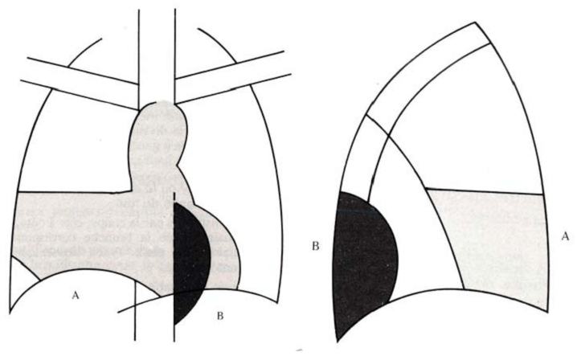
– Nguyên lý vật lý và định nghĩa cơ bản:
+ Dấu hiệu bóng bờ (Silhouette sign) mô tả sự mất đường bờ ranh giới giải phẫu tự nhiên giữa hai cấu trúc có cùng đậm độ dịch hoặc mô mềm khi chúng tiếp xúc trực tiếp trên cùng một mặt phẳng thẳng đứng hoặc cắt ngang.
+ Dấu hiệu bóng bờ dương tính xảy ra khi tổn thương có đậm độ dịch hoặc mô mềm nằm tiếp xúc trực tiếp với bờ của một cấu trúc giải phẫu lân cận làm xóa đi đường viền phân cách.
+ Dấu hiệu bóng bờ âm tính xảy ra khi tổn thương và cấu trúc lân cận tuy chồng hình trên phim X-quang 2D nhưng nằm trên hai mặt phẳng giải phẫu trước sau khác nhau nên đường viền phân cách vẫn được bảo tồn.
+ Cơ chế sinh lý bệnh dựa trên sự mất chênh lệch trở kháng quang tuyến X giữa phế nang chứa khí và cấu trúc mô mềm lân cận khi phế nang bị lấp đầy bởi dịch, mủ, máu hoặc tế bào u.
– Định vị giải phẫu tổn thương trên X-quang ngực thẳng và nghiêng:
+ Mờ bờ tim phải gợi ý tổn thương thuộc thùy giữa phổi phải (phân thùy S4, S5) hoặc phân thùy trước thùy trên phổi phải (phân thùy S3).
+ Mờ bờ tim trái gợi ý tổn thương thuộc phân thùy lưỡi của thùy trên phổi trái (phân thùy S4, S5).
+ Mờ cung động mạch chủ gợi ý tổn thương thuộc phân thùy đỉnh-sau thùy trên phổi trái (phân thùy S1+2).
+ Mờ quai động mạch chủ lên gợi ý tổn thương thuộc phân thùy trước thùy trên phổi phải (phân thùy S3).
+ Mờ đường viền động mạch chủ xuống hoặc đường cạnh sống trái gợi ý tổn thương thuộc thùy dưới phổi trái (phân thùy S6, S8, S9, S10).
+ Mờ vòm hoành phải gợi ý tổn thương thuộc thùy dưới phổi phải (phân thùy S7, S8, S9, S10) hoặc tràn dịch màng phổi phải.
+ Mờ vòm hoành trái gợi ý tổn thương thuộc thùy dưới phổi trái (phân thùy S8, S9, S10) hoặc tràn dịch màng phổi trái.
– Phân tích cạm bẫy chẩn đoán và kinh nghiệm lâm sàng:
+ Dương tính giả do kỹ thuật hít vào không đủ sâu, bệnh nhân béo phì, biến dạng lồng ngực dạng ngực lõm, lớp mỡ cạnh tim dầy hoặc hiện tượng hiệu ứng thể tích tích tụ trên phim chụp tại giường tư thế AP.
+ Âm tính giả do tổn thương kích thước nhỏ, nằm nông sát thành ngực trước hoặc sau mà chưa tiếp xúc đủ diện tích với đường bờ giải phẫu lân cận.
+ Phân biệt xẹp phổi thụ động do tràn dịch màng phổi với đông đặc phổi nhiễm trùng dựa trên sự kết hợp dấu hiệu cơ hoành mờ và dấu hiệu phế quản khí.
– Khi có xóa bờ: dấu hiệu Silhouette sign (+).
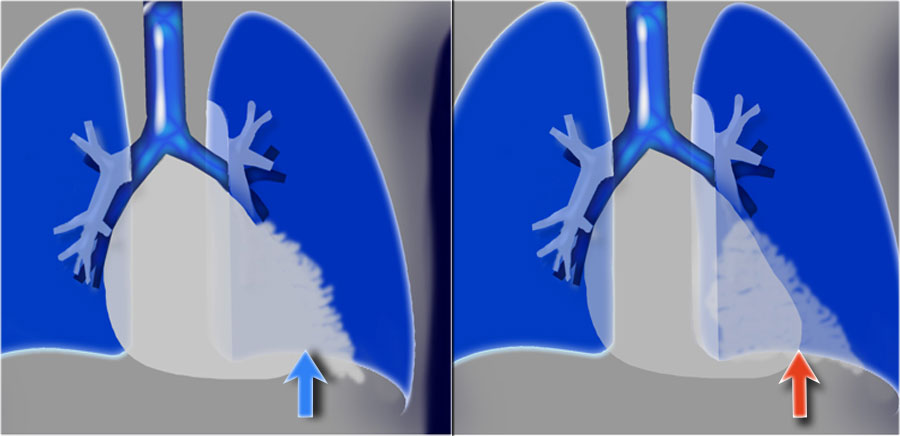
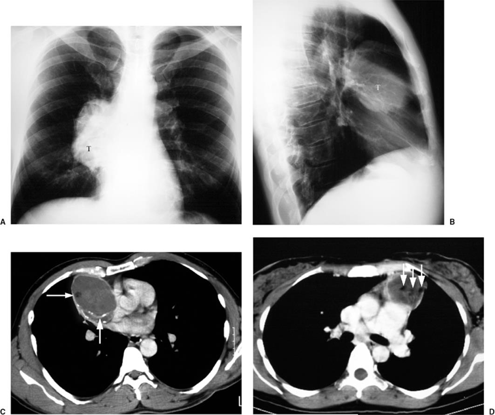
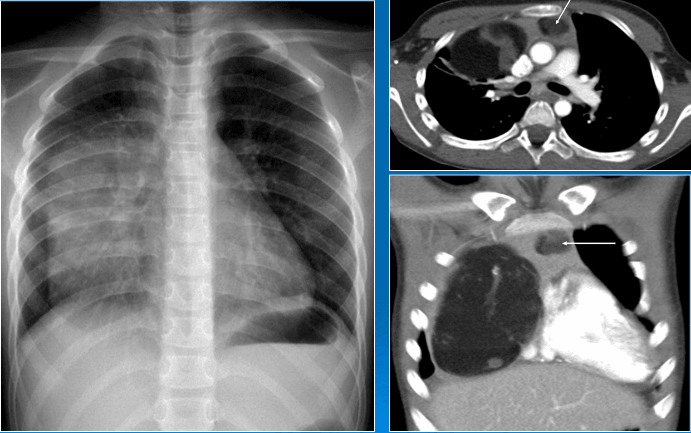
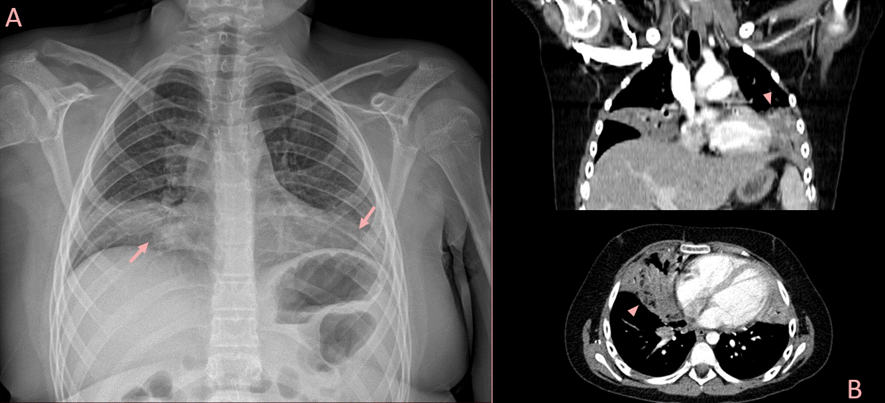
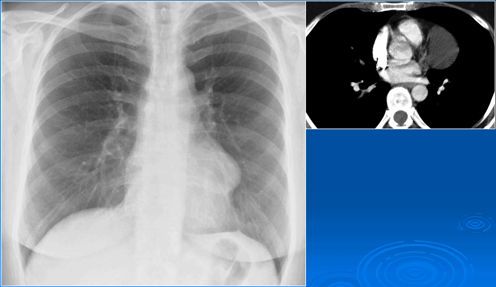

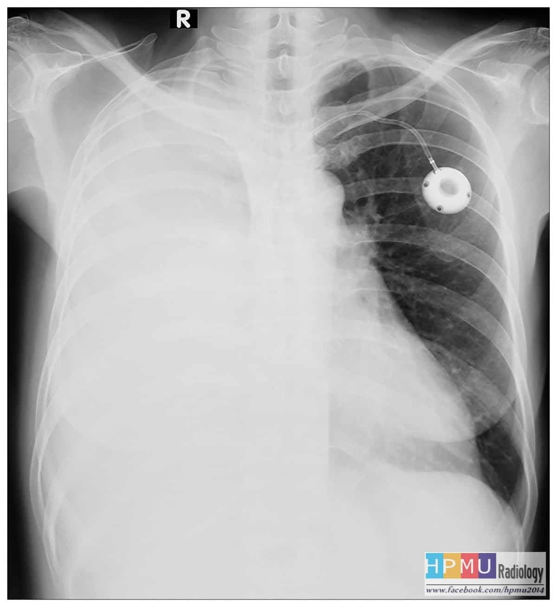
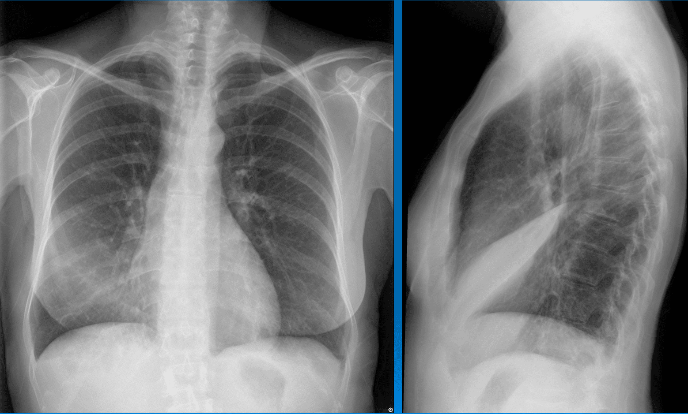
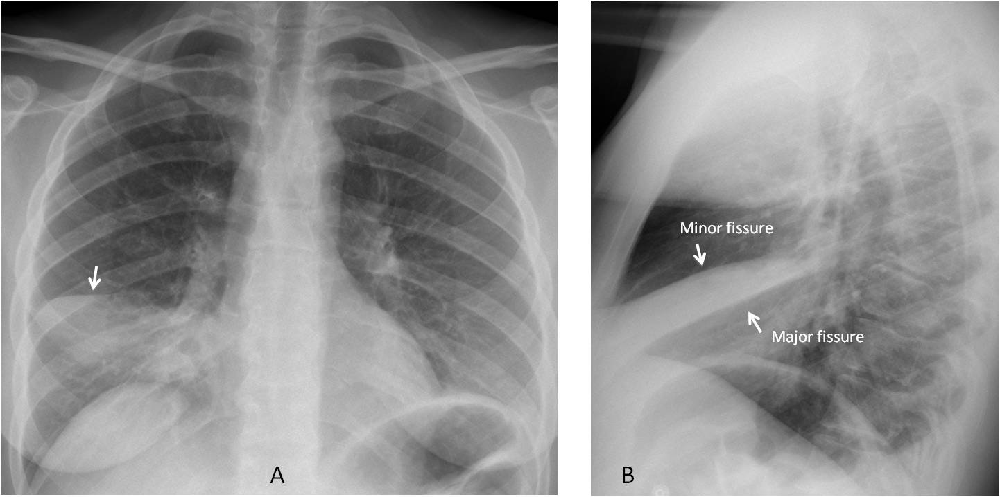
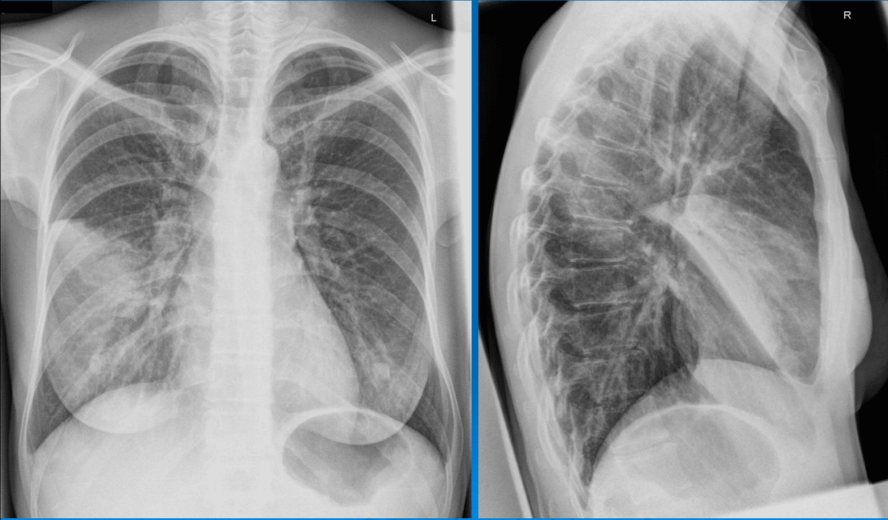
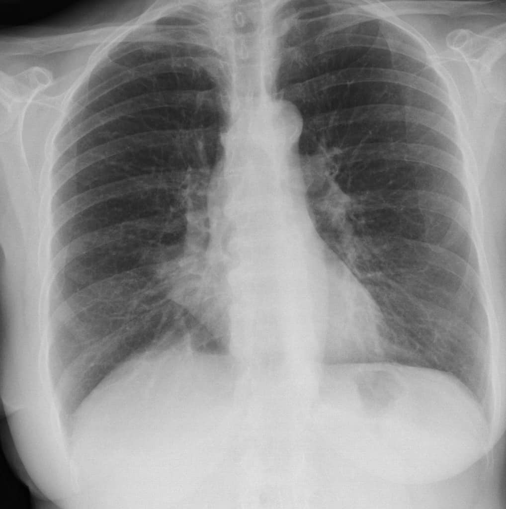
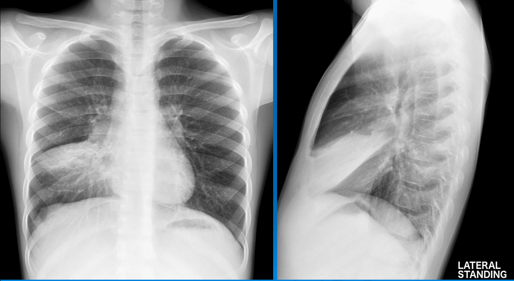
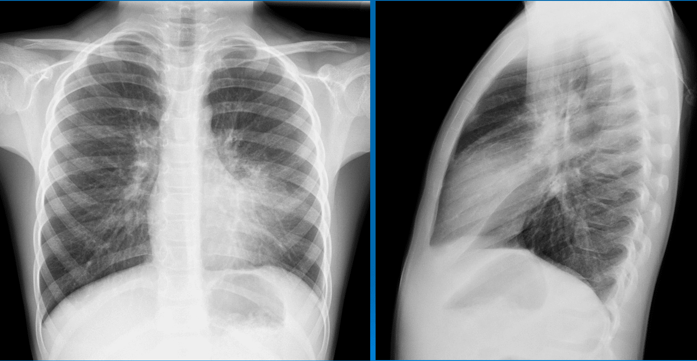
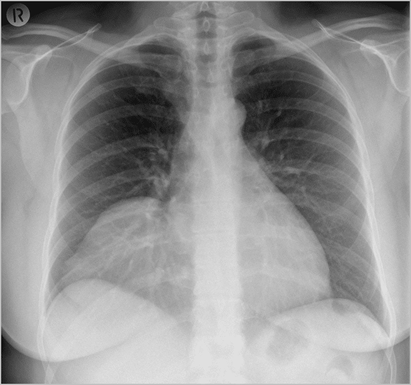
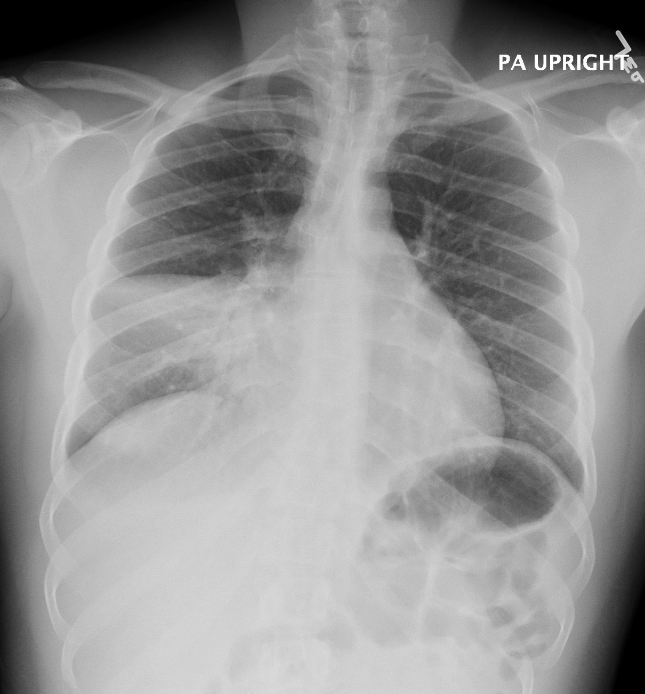
– Khi không xóa bờ: dấu hiệu Silhouette sign (-).
=> Case lâm sàng 1: khối u màng tim
© Chẩn Đoán Hình Ảnh Xray.vn
2. Dấu hiệu cổ ngực
– Nguyên lý giải phẫu vật lý và bản chất tạo hình:
+ Dấu hiệu cổ ngực (Cervico-thoracic sign) là một biến thể chuyên biệt của dấu hiệu bóng bờ giúp định vị tổn thương thuộc khoang trung thất trước hay trung thất sau dựa trên độ nghiêng của lỗ trên lồng ngực.
+ Bờ trên của trung thất trước kết thúc giải phẫu ngay tại mức vòm xương đòn và tiếp xúc trực tiếp với mô mềm vùng cổ mà không có khí phổi bao quanh.
+ Đỉnh phổi ở khoang trung thất sau kéo dài vượt cao hơn mức xương đòn về phía sau nên tổn thương nằm hoàn toàn ở trung thất sau vẫn được khí của màng phổi bao bọc xung quanh.
+ Dấu hiệu cổ ngực dương tính xảy ra khi đường bờ trên của bóng mờ bị xóa mờ hoặc mất đi khi vượt qua mức xương đòn do bị mô mềm vùng cổ xóa bờ tiếp xúc, khẳng định tổn thương nằm ở vùng cổ kéo dài xuống trung thất trước hoặc nằm hoàn toàn trong trung thất trước.
+ Dấu hiệu cổ ngực âm tính xảy ra khi đường bờ trên của bóng mờ vẫn quan sát thấy rõ ràng trên mức xương đòn do được khí đỉnh phổi bao quanh, khẳng định tổn thương nằm ở trung thất sau hoặc vùng đỉnh phổi phía sau.
– Phân tích nguyên nhân bệnh lý và chẩn đoán phân biệt:
+ Dấu hiệu cổ ngực dương tính thường gặp trong bướu giáp chìm sau xương ức, u tuyến ức, nang khe giáp, u bạch huyết dạng nang, u mỡ trung thất trước hoặc u hạch lympho khoang trước mạch máu.
+ Dấu hiệu cổ ngực âm tính thường gặp trong u nguồn gốc thần kinh như u bao thần kinh, u sợi thần kinh, u hạch thần kinh khoang cạnh sống, phồng động mạch dưới đòn, nang ruột đôi hoặc u đỉnh phổi.
– Phân tích cạm bẫy chẩn đoán và kinh nghiệm lâm sàng:
+ Cạm bẫy do tư thế bệnh nhân nhún vai hoặc nâng xương đòn làm thay đổi mốc giải phẫu tương quan giữa xương đòn và đỉnh phổi trên phim X-quang.
+ Tổn thương kích thước quá lớn phát triển lan rộng cả khoang trước và khoang sau làm mất tính đặc hiệu của dấu hiệu.
+ Giả tổn thương do động mạch dưới đòn ngoằn ngoèo hoặc xương sườn cổ ở người lớn tuổi.
=> Dấu hiệu cổ ngực (+):
=> Case lâm sàng 1:
=> Dấu hiệu cổ ngực (-):
=> Case lâm sàng 1:
=> Case lâm sàng 2:
3. Dấu hiệu ngực bụng
– Nguyên lý giải phẫu vật lý và bản chất tạo hình:
+ Dấu hiệu ngực bụng (Thoraco-abdominal sign) hay còn gọi là dấu hiệu tảng băng (Iceberg sign) dựa trên sự tương phản đậm độ giữa mô mềm tổn thương với không khí trong phế nang phổi tại vùng tiếp giáp ngực bụng.
+ Tổn thương nằm hoàn toàn trong lồng ngực có đường bờ dưới quy tụ về phía cột sống và được hiển thị rõ nét trên X-quang do được không khí phế nang bao bọc xung quanh.
+ Dấu hiệu ngực bụng dương tính (Thoraco-abdominal sign (+)) xảy ra khi một bóng mờ đi qua vòm hoành có đường bờ bên phân kỳ ra xa cột sống và bờ dưới mờ dần hoặc mất hẳn trong ổ bụng do hiện tượng xóa bờ với các cấu trúc mô mềm và tạng vùng hậu phúc mạc.
+ Tương quan tảng băng mô tả phần bóng mờ quan sát được trên X-quang ngực chỉ là phần nổi đỉnh tổn thương trong lồng ngực, trong khi phần lớn thể tích tổn thương nằm ẩn bên dưới vòm hoành thuộc khoang ổ bụng hoặc hậu phúc mạc.
– Phân tích nguyên nhân bệnh lý và chẩn đoán phân biệt vùng tiếp giáp ngực bụng:
+ Dấu hiệu ngực bụng dương tính (Thoraco-abdominal sign (+)) gợi ý các tổn thương lan từ sau phúc mạc hoặc ổ bụng lên lồng ngực như u thần kinh vòm hoành, u hạch thần kinh sau phúc mạc, u mỡ sarcoma, u cơ vân sarcoma, áp xe cơ thắt lưng chậu, thoát vị hoành hay phồng động mạch chủ bụng lan lên ngực.
+ Dấu hiệu ngực bụng âm tính (Thoraco-abdominal sign (-)) gợi ý tổn thương nằm hoàn toàn trong lồng ngực như khối u thùy dưới phổi, u màng phổi, u thần kinh trung thất sau đơn thuần hoặc nang màng ngoài tim.
– Phân tích cạm bẫy chẩn đoán và kinh nghiệm lâm sàng:
+ Cạm bẫy dương tính giả do biến dạng vòm hoành, nhô vòm hoành khu trú, phì đại dải mỡ cạnh tim hoặc xẹp phổi dạng dải ở đáy phổi.
+ Cạm bẫy âm tính giả khi tổn thương sau phúc mạc kích thước nhỏ chưa tạo ra hiệu ứng khối đè đẩy vòm hoành hoặc tổn thương có đậm độ vôi hóa cao làm xuất hiện bờ rõ trong ổ bụng.
+ Nhận diện cạm bẫy thoát vị hoành nghẹt bằng cách tìm kiếm hình ảnh mức khí dịch thuộc quai ruột hoặc dạ dày chui lên lồng ngực.
– Trường hợp bóng mờ ở vùng đáy phổi, có bờ thấy rõ phía dưới mức vòm hoành nghĩa là còn được bao bọc bởi khí trong phổi => bóng mờ hoàn toàn thuộc lồng ngực.
=> Case lâm sàng 1:
– Nếu bóng mờ ngang qua vòm hoành mà không rõ bờ hoặc đi xa bờ cột sống thì tổn thương có phần trong lồng ngực và phần trong ổ bụng (không thấy do không có khí bao quanh – dấu hiệu bóng bờ). Hình ảnh này gọi là dấu hiệu “Tảng băng” với phần nổi của tảng băng là phần thấy được ở lồng ngực.
=> Case lâm sàng 1:
4. Dấu hiệu cánh buồm

– Nguyên lý giải phẫu sinh lý và đặc điểm hình ảnh tuyến ức bình thường ở trẻ em:
+ Tuyến ức phát triển hoàn chỉnh từ khi sinh, đạt thể tích tương đối lớn nhất so với lồng ngực ở giai đoạn sơ sinh và trẻ dưới 2 tuổi, thoái triển dần trước 8 tuổi và thay thế hoàn toàn bằng mỡ ở tuổi trưởng thành.
+ Dấu hiệu cánh buồm (Sail sign) là hình ảnh bóng tuyến ức bờ thẳng hình tam giác nhọn nhô ra ở cạnh phải hoặc cả hai bên trung thất trước trên phim X-quang ngực thẳng trẻ em.
+ Dấu hiệu gợn sóng (Wave sign) là hình ảnh bờ tuyến ức có các dải lằn gợn sóng do sự đè đẩy mềm mại của các cung xương sườn phía trước lồng ngực lên nhu mô tuyến ức khi hít vào.
+ Sự hiện diện của Sail sign và Wave sign khẳng định bóng mờ trung thất là nhu mô tuyến ức lành tính hoàn toàn bình thường do tính chất mềm mại và không gây hiệu ứng chèn ép khối.
– Phân tích nguyên nhân bệnh lý và chẩn đoán phân biệt khối mờ trung thất trước ở trẻ em:
+ Phân biệt tuyến ức bình thường với phì đại tuyến ức dội ngược (Thymic rebound) xuất hiện sau điều trị hóa chất, ghép tủy hoặc ngừng corticoid toàn thân.
+ Phân biệt Sail sign bình thường với dấu hiệu cánh buồm Spinnaker (Spinnaker-sail sign) hay dấu hiệu cánh thiên thần (Angel wing sign) trong tràn khí trung thất khi tuyến ức bị khí bóc tách đẩy lệch lên cao khỏi cơ hoành và tim.
+ Chẩn đoán phân biệt với các khối u trung thất trước ác tính ở trẻ em như u lympho, u tế bào mầm, u tuyến ức hoặc nang tuyến ức dựa trên tính chất cứng, đè đẩy lệch đường thở và chèn ép mạch máu lớn.
– Phân tích cạm bẫy chẩn đoán và kinh nghiệm lâm sàng:
+ Cạm bẫy nhầm lẫn tuyến ức bình thường với viêm phổi thùy trên hoặc xẹp thùy trên phổi phải (phân biệt bằng dấu hiệu phế quản khí và xẹp thể tích phổi).
+ Dương tính giả u trung thất dẫn đến chỉ định chụp cắt lớp vi tính hoặc sinh thiết không cần thiết ở trẻ nhỏ dưới 2 tuổi.
+ Nhận diện hiện tượng thoái triển muộn hoặc phì đại tuyến ức lành tính ở thanh thiếu niên để tránh can thiệp phẫu thuật nhầm.
– Dấu hiệu sóng “wave sign”:

– Nguyên lý sinh lý động học và đặc điểm tạo hình nhu mô tuyến ức:
+ Sự biến đổi hình thái tuyến ức theo thì hô hấp dựa trên bản chất nhu mô mềm mại, đàn hồi cao và không chứa khung sợi xơ vững chắc ở trẻ sơ sinh và trẻ nhỏ.
+ Trong thì thở ra, thể tích lồng ngực giảm, cơ hoành dâng cao và áp lực nội lồng ngực gia tăng làm tuyến ức bị ép ngắn lại theo chiều dọc, phồng to ra hai bên làm bóng trung thất rộng ra đáng kể.
+ Trong thì hít vào, lồng ngực dãn nở, cơ hoành hạ thấp và phổi di chuyển xuống dưới kéo dãn tuyến ức theo chiều dọc làm bề ngang bóng tuyến ức thon gọn lại rõ rệt.
+ Dấu hiệu biến đổi hình thái theo nhịp thở (Thymic flexibility sign) khẳng định tính chất lành tính của tuyến ức, giúp phân biệt triệt để với các khối u trung thất có cấu trúc mô cứng và cố định.
– Phân tích nguyên nhân bệnh lý và chẩn đoán phân biệt khối mờ trung thất trước ở trẻ em:
+ Tuyến ức bình thường hoặc phì đại lành tính có biên độ biến đổi kích thước và hình dạng rõ rệt giữa hai thì hô hấp trên phim X-quang hoặc chiếu X-quang tăng sáng.
+ Các khối u trung thất trước ác tính như u lympho, u tế bào mầm, u tuyến ức hoặc u quái có cấu trúc mô đặc rắn, kích thước và hình dạng cố định không thay đổi theo thì hít vào hay thở ra.
+ Dấu hiệu biến đổi hình thái giúp loại trừ các trường hợp chẩn đoán nhầm phì đại tuyến ức với tổn thương u ác tính gây chèn ép đường thở ở trẻ nhỏ dưới 2 tuổi.
– Phân tích cạm bẫy chẩn đoán và kinh nghiệm lâm sàng:
+ Cạm bẫy dương tính giả u trung thất khi chụp X-quang ở thì thở ra hoặc trẻ khóc làm bóng tuyến ức phình to giả tạo gây nhầm lẫn với u trung thất trước.
+ Cạm bẫy âm tính giả ở trẻ có suy hô hấp nặng, thở nhanh nông hoặc bệnh lý phổi tắc nghẽn làm giảm biên độ di động của lồng ngực và vòm hoành.
+ Hiện tượng phì đại tuyến ức dội ngược (Thymic rebound) sau điều trị hóa chất vẫn giữ nguyên tính chất mềm mại và biến dạng linh hoạt theo thì hô hấp.
5. Dấu hiệu cánh dơi
– Nguyên lý sinh lý bệnh và đặc điểm giải phẫu tạo hình:
+ Dấu hiệu cánh buồm Spinnaker (Spinnaker-sail sign) hay còn gọi là dấu hiệu cánh thiên thần (Angel wing sign) hoặc dấu hiệu cánh tuyến ức (Thymic wing sign) hình thành khi có lượng không khí tự do lớn tích tụ trong khoang trung thất ở trẻ sơ sinh và trẻ nhỏ.
+ Áp lực khí tự do bóc tách khoang trung thất trước, đẩy hai thùy tuyến ức bị nâng bổng lên trên và sang hai bên, tách biệt hoàn toàn khỏi bóng tim và vòm hoành.
+ Hình ảnh X-quang ghi nhận hai thùy tuyến ức bị kéo dãn nhọn đầu sang hai bên được khí trung thất bao bọc xung quanh, tạo nên hình ảnh giống như cánh buồm thuyền căng gió (Spinnaker) hoặc đôi cánh thiên thần/cánh dơi.
+ Hiện tượng Macklin là cơ chế sinh lý bệnh cốt lõi: sự vỡ phế nang do tăng áp lực đường thở dẫn đến khí thoát ra dọc theo dải bao phế quản-mạch máu di chuyển ngược về khoang trung thất.
– Phân tích nguyên nhân bệnh lý và chẩn đoán phân biệt tràn khí trung thất sơ sinh:
+ Nguyên nhân thường gặp bao gồm chấn thương sản khoa, hội chứng hít nước ối phân su, bệnh màng trong, biến chứng của thông khí nhân tạo áp lực dương quá mức hoặc chấn thương vỡ khí phế quản.
+ Chẩn đoán phân biệt giữa Spinnaker-sail sign (tràn khí trung thất) với dấu hiệu cánh buồm bình thường (Sail sign) của tuyến ức dựa trên sự xuất hiện của dải khí sáng nằm ngang ngăn cách giữa bờ dưới tuyến ức và bờ trên bóng tim.
+ Phân biệt tràn khí trung thất với tràn khí màng ngoài tim (Pneumopericardium): khí màng ngoài tim giới hạn dưới các mạch máu lớn và không đẩy nâng tuyến ức lên cao.
+ Phân biệt tràn khí trung thất với tràn khí màng phổi hai bên (Pneumothorax): tràn khí màng phổi tụ khí ở khoang màng phổi phía ngoài và nhu mô phổi bị ép xẹp về phía rốn phổi, không bóc tách tuyến ức.
– Phân tích cạm bẫy chẩn đoán và kinh nghiệm lâm sàng:
+ Cạm bẫy nhầm lẫn Spinnaker-sail sign với tràn khí màng phổi hai bên dẫn đến chỉ định đặt dẫn lưu màng phổi sai lầm và gây tổn thương nhu mô phổi của trẻ sơ sinh.
+ Cạm bẫy dương tính giả do nếp gấp da, dây nối thiết bị y tế hoặc dải mỡ cạnh tim chồng hình trên phim X-quang chụp tại lồng ấp.
+ Cạm bẫy bỏ sót tràn khí trung thất tiến triển gây chèn ép tim (Tension pneumomediastinum) ảnh hưởng nghiêm trọng đến huyết động.
6. Che phủ / hội tụ rốn phổi
* Dấu hiệu che phủ rốn phổi (Hilum Overlay Sign)
– Nguyên lý giải phẫu vật lý và bản chất tạo hình:
+ Dấu hiệu che phủ rốn phổi (Hilum overlay sign) do Benjamin Felson mô tả, dựa trên nguyên lý bóng bờ giúp phân biệt một khối mờ nằm tại vùng rốn phổi với một khối mờ thuộc trung thất trước hoặc trung thất sau nằm chồng hình lên rốn phổi.
+ Nếu vẫn nhìn thấy rõ đường bờ của động mạch phổi trái hoặc phải và các nhánh chính đi xuyên qua bóng mờ ở vùng rốn phổi, tổn thương đó không thuộc rốn phổi (Hilum overlay sign (+)).
+ Nếu tổn thương xuất phát từ chính rốn phổi, các phế nang chứa khí xung quanh động mạch phổi bị thay thế làm xóa đường bờ của động mạch phổi (Hilum overlay sign (-)).
+ Tương quan với bờ tim giúp định vị chiều sâu: nếu bóng mờ xóa bờ tim (Silhouette sign (+)), khối mờ nằm ở trung thất trước (cùng mặt phẳng với tim và ở phía trước động mạch phổi); nếu bóng mờ không xóa bờ tim (Silhouette sign (-)), khối mờ nằm ở trung thất sau (khác mặt phẳng với tim và ở phía sau động mạch phổi).
– Phân tích nguyên nhân bệnh lý:
+ Tổn thương trung thất trước gây Hilum overlay sign (+) và xóa bờ tim bao gồm u tuyến ức, u lympho (Lymphoma), u tế bào mầm, bướu giáp chìm, u quái trung thất hoặc phồng động mạch chủ lên.
+ Tổn thương trung thất sau gây Hilum overlay sign (+) và không xóa bờ tim bao gồm u nguồn gốc thần kinh, u phồng động mạch chủ xuống, áp xe cạnh sống, nang ruột đôi hoặc khối mờ màng phổi/phổi phía sau.
+ Tổn thương thực sự tại rốn phổi gây Hilum overlay sign (-) bao gồm ung thư phế quản trung tâm, u lympho rốn phổi, bệnh hạch phì đại (Lao, Sarcoidosis, bệnh Castleman), phình động mạch phổi hoặc dị dạng động tĩnh mạch phổi.
– Phân tích cạm bẫy chẩn đoán và kinh nghiệm lâm sàng:
+ Cạm bẫy nhầm lẫn Hilum overlay sign với Hilum convergence sign (dấu hiệu hội tụ rốn phổi) khi đánh giá khối tổn thương mạch máu lớn vùng rốn phổi.
+ Cạm bẫy dương tính giả do sự chồng hình của biến dạng lồng ngực, quai động mạch chủ ngoằn ngoèo hoặc quai động mạch phổi phì đại ở người cao tuổi.
+ Cạm bẫy âm tính giả khi khối u trung thất trước hoặc sau có kích thước quá lớn chèn ép và xâm lấn đè sụp cấu trúc động mạch phổi.

– Nếu bóng mờ đó mà xóa bờ tim thì nó sẽ nằm ở cùng mặt phẳng với tim nghĩa là nằm phía trước động mạch phổi: “Dấu hiệu che phủ phía trước”
– Nếu bóng mờ đó không xóa bờ tim thì nó sẽ không nằm cùng mặt phẳng với tim nghĩa là nằm ở phía sau động mạch phổi: “Dấu hiệu che phủ phía sau”


=> Case lâm sàng 1:
=> Case lâm sàng 2:

* Dấu hiệu hội tụ rốn phổi (Hilum Convergence Sign)
– Nguyên lý giải phẫu vật lý và bản chất tạo hình:
+ Dấu hiệu hội tụ rốn phổi (Hilum convergence sign) do Benjamin Felson mô tả giúp phân biệt một bóng mờ rốn phổi có bản chất là mạch máu phình to (động mạch phổi) hay khối u trung thất/hạch rốn phổi không thuộc mạch máu.
+ Dấu hiệu hội tụ rốn phổi dương tính (Hilum convergence sign (+)) xảy ra khi các nhánh mạch máu phổi quy tụ trực tiếp về tâm khối mờ hoặc dừng lại ngay tại bờ ngoài bóng mờ (không đi quá 1cm vào bên trong bờ), khẳng định bóng mờ chính là động mạch phổi giãn rộng.
+ Dấu hiệu hội tụ rốn phổi âm tính (Hilum convergence sign (-)) xảy ra khi các nhánh mạch máu phổi đi xuyên qua hoặc quy tụ về phía sau/trước bóng mờ tới tận rốn phổi thực sự, khẳng định bóng mờ là khối u hoặc hạch trung thất không xuất phát từ động mạch phổi.
+ Cơ chế tạo hình dựa trên sự liên tục giải phẫu của cấu trúc cây mạch máu phổi so với sự đè đẩy hoặc chồng hình đơn thuần của các khối u đặc ngoài mạch máu.
– Phân tích nguyên nhân bệnh lý:
+ Hilum convergence sign (+) gặp trong các bệnh lý mạch máu phổi như tăng áp lực động mạch phổi nguyên phát hoặc thứ phát, phồng động mạch phổi, giả phình động mạch phổi do chấn thương hoặc nhiễm trùng (phồng Rasmussen trong lao phổi), và còn ống động mạch.
+ Hilum convergence sign (-) gặp trong các khối u hoặc bệnh lý hạch rốn phổi như ung thư phế quản trung tâm, u lympho, bệnh hạch phì đại do Sarcoidosis, lao phổi, bệnh Castleman, u quái hoặc u tuyến ức phát triển sang hai bên.
– Phân tích cạm bẫy chẩn đoán và kinh nghiệm lâm sàng:
+ Cạm bẫy nhầm lẫn Hilum convergence sign với Hilum overlay sign (dấu hiệu che phủ rốn phổi) khi đánh giá các khối mờ lớn ở vùng trung thất kề cận rốn phổi.
+ Cạm bẫy dương tính giả khi khối hạch hoặc u trung thất bao bọc hoàn toàn và chèn ép gây hẹp lòng các nhánh động mạch phổi làm các mạch máu ngoại vi trông như dừng lại tại bờ khối u.
+ Cạm bẫy do dị dạng bẩm sinh mạch máu phổi như bất phát động mạch phổi một bên hoặc phình tĩnh mạch phổi chồng hình.


=> Case lâm sàng 1:


=> Case lâm sàng 2:
* Dấu hiệu rộng rốn phổi (Hilar enlargement / Dense hilum sign)
– Nguyên lý giải phẫu vật lý và bản chất tạo hình:
+ Dấu hiệu rộng rốn phổi (Hilar enlargement) và dấu hiệu rốn phổi đậm (Dense hilum sign) mô tả sự bất thường về kích thước, hình dạng hoặc tăng đậm độ X-quang của một hoặc hai bên rốn phổi so với bên đối diện.
+ Bình thường đậm độ quang tuyến của hai rốn phổi cân bằng, đối xứng và được tạo nên chủ yếu bởi các nhánh động mạch, tĩnh mạch phổi cùng các phế quản chính.
+ Dấu hiệu rốn phổi đậm (Dense hilum sign) do Felson mô tả xuất hiện khi một rốn phổi có đậm độ mờ cao hơn hẳn rốn phổi bên đối diện trên phim thẳng PA, gợi ý có tổn thương dạng khối hoặc hạch nằm tại rốn phổi hoặc nằm đè ở thùy phổi phía trước/sau rốn phổi.
+ Dấu hiệu rộng rốn phổi biểu hiện bằng sự gia tăng kích thước chiều ngang hoặc diện tích vùng rốn phổi vượt quá giới hạn sinh lý bình thường.
– Phân tích nguyên nhân bệnh lý:
+ Rộng hoặc đậm rốn phổi đơn bên thường do ung thư phế quản nguyên phát vùng rốn phổi, bệnh hạch lympho đơn bên (lao phổi, nấm phổi, ung thư di căn hạch), phồng động mạch phổi hoặc dị dạng động tĩnh mạch.
+ Rộng hoặc đậm rốn phổi hai bên đối xứng hoặc bất đối xứng thường gặp trong bệnh Sarcoidosis (tam chứng Garland 1-2-3), u lympho (Lymphoma), bệnh bụi phổi (Pneumoconiosis), tăng áp động mạch phổi nặng hoặc di căn hạch lympho hai bên.
– Phân tích cạm bẫy chẩn đoán và kinh nghiệm lâm sàng:
+ Cạm bẫy dương tính giả rốn phổi đậm do kỹ thuật chụp xoay bệnh nhân, tia chụp quá mềm, hoặc do sự chồng hình của cấu trúc mạch máu ngoằn ngoèo ở người lớn tuổi.
+ Cạm bẫy do tổn thương đông đặc hoặc xẹp phổi phân thùy S2 hoặc S6 nằm ở phía trước hoặc sau rốn phổi chồng hình tạo nên Dense hilum sign giả tạo.
+ Cạm bẫy bỏ sót hạch rốn phổi kích thước nhỏ nằm khuất sau bóng tim hoặc quai động mạch chủ trên phim X-quang thẳng.


=> Case lâm sàng 1:

=> Case lâm sàng 2:

=> Case lâm sàng 3:


=> Case lâm sàng 4:


=> Case lâm sàng 5:


=> Case lâm sàng 6:


=> Case lâm sàng 7:


7. Khí phế quản đồ
– Nguyên lý giải phẫu vật lý và bản chất tạo hình:
+ Bình thường phế quản chứa khí nằm trong môi trường nhu mô phế nang cũng chứa khí nên không tạo ra sự chênh lệch đậm độ tia X để hiển thị đường bờ phế quản.
+ Dấu hiệu khí phế quản đồ (Air bronchogram sign) hình thành khi các phế nang bị lấp đầy bởi dịch, mủ, máu, tế bào u hoặc bị mất thông khí, trong khi lòng phế quản dẫn truyền vẫn duy trì thông thoáng và chứa khí.
+ Dấu hiệu Air bronchogram sign (+) biểu hiện là các nhánh phế quản sáng chứa khí phân nhánh thuôn nhỏ dạng cành cây nằm nổi bật trên nền nhu mô phổi mờ đục.
+ Khẳng định chắc chắn tổn thương nằm trong nhu mô phổi, giúp loại trừ triệt để các tổn thương xuất phát từ thành ngực, khoang màng phổi hay trung thất.
– Phân tích nguyên nhân bệnh lý:
+ Nguyên nhân lành tính thường gặp bao gồm viêm phổi thùy, phù phổi cấp do tim và tổn thương phế nang lan tỏa ARDS, xẹp phổi thụ động do tràn dịch hoặc tràn khí màng phổi, dập phổi chấn thương, xuất huyết phế nang lan tỏa và nhồi máu phổi.
+ Trong phù phổi do tim, Air bronchogram sign (+) đi kèm bóng tim to, đường Kerley B và tràn dịch màng phổi hai bên; trong ARDS, Air bronchogram sign (+) phân bố lan tỏa hai bên nhưng không có bóng tim to hay tăng áp lực tĩnh mạch phổi.
+ Trong u phổi, Air bronchogram sign (-) là điển hình cho u rắn tắc nghẽn phế quản, tuy nhiên Air bronchogram sign (+) vẫn có thể gặp trong ung thư biểu mô tuyến dạng lê-píc (MIA hoặc AIS), ung thư biểu mô tuyến tiết nhầy (Invasive mucinous adenocarcinoma) hoặc u lympho phổi nguyên phát (MALT lymphoma).
+ Xẹp phổi thụ động hoặc xẹp phổi do nén có Air bronchogram sign (+) và thông thoáng cây phế quản, ngược lại xẹp phổi do tắc nghẽn như u, dị vật hoặc nút nhầy có Air bronchogram sign (-) do lòng phế quản bị bít tắc hoàn toàn.
– Phân tích cạm bẫy chẩn đoán và kinh nghiệm lâm sàng:
+ Cạm bẫy nhầm lẫn dấu hiệu phế quản mạch đồ (CT angiogram sign) hoặc giãn phế quản chứa dịch với Air bronchogram sign (+) trên phim cắt lớp vi tính không tiêm thuốc đối quang từ.
+ Dấu hiệu khí phế quản đồ tĩnh (Static air bronchogram) trên siêu âm hoặc X-quang có thể gặp trong xẹp phổi do nút nhầy bít tắc tạm thời phế quản ngõ vào, cần hút đờm qua nội soi phế quản để đánh giá lại.
+ Cạm bẫy bỏ sót u phế quản trung tâm ở bệnh nhân có Air bronchogram sign (+) thùy dưới do tổn thương viêm phổi tắc nghẽn giai đoạn sớm.
– Một bóng mờ có Air bronchogram sign (+) thì có thể khẳng định tổn thương ở trong phổi. Air bronchogram sign (+) giúp loại trừ một tổn thương thành ngực, màng phổi và trung thất.
– Các khối u phổi thường có Air bronchogram sign (-), ngoại trừ ung thư biểu mô phế quản phế nang (Bronchoalveolar carcinoma).
=> Case lâm sàng 1:
=> Case lâm sàng 2:
8. Dấu hiệu Golden S
– Nguyên lý giải phẫu vật lý và bản chất tạo hình:
+ Dấu hiệu S Golden (Golden S sign / Reverse S sign of Golden) được Ross và Golden mô tả lần đầu năm 1925, phản ánh sự kết hợp giữa xẹp thùy trên phổi và khối u phế quản trung tâm ở rốn phổi.
+ Trên phim X-quang ngực thẳng tư thế PA bên phải, đường cong hình chữ S ngược (Reverse S) được tạo thành từ hai thành phần: phần lồi ra ở phía rốn phổi do bờ ngoài của khối u phồng ra và phần lõm vào ở phía ngoại vi do rãnh liên thùy bé bị kéo dịch chuyển lên trên và vào trong.
+ Đối với thùy trên phổi trái, cấu trúc chữ S xuất hiện dưới dạng hình chữ S thuận (Erect S sign) do giải phẫu không có rãnh liên thùy bé mà do rãnh liên thùy lớn bị co kéo ra trước và lên trên kết hợp với bờ khối u rốn phổi trái.
+ Cơ chế sinh lý bệnh dựa trên sự bít tắc hoàn toàn lòng phế quản thùy trên (thường gặp nhất là ung thư biểu mô tế bào vảy – Squamous cell carcinoma) gây hấp thu hoàn toàn khí phế nang, dẫn đến giảm thể tích nhu mô phổi nghiêm trọng và co kéo các rãnh liên thùy.
– Phân tích nguyên nhân bệnh lý và chẩn đoán phân biệt:
+ Nguyên nhân ác tính chiếm đa số (trên 80-90%), đứng đầu là ung thư phế quản trung tâm (Squamous cell carcinoma, Small cell lung carcinoma, Adenocarcinoma) gây tắc phế quản thùy trên.
+ Nguyên nhân lành tính ít gặp hơn bao gồm bệnh hạch lympho lớn phì đại chèn ép (Lao, Sarcoidosis, nấm Histoplasmosis), u tuyến phế quản (Bronchial carcinoid tumor), dị vật đường thở bỏ sót hoặc nút nhầy đặc ở bệnh nhân thông khí nhân tạo.
+ Chẩn đoán phân biệt với xẹp thùy trên đơn thuần do nút nhầy (đường co kéo rãnh liên thùy liên tục cong lõm hoàn toàn, không có phần lồi khối u ở rốn phổi) và viêm phổi thùy trên dạng đông đặc (không có sự giảm thể tích phổi rõ rệt).
– Phân tích cạm bẫy chẩn đoán và kinh nghiệm lâm sàng:
+ Cạm bẫy nhầm lẫn giữa khối u gây xẹp phổi với tổn thương đông đặc do viêm phổi thùy trên dẫn đến chậm trễ trong chẩn đoán ung thư phổi.
+ Cạm bẫy dương tính giả do xẹp thùy trên đi kèm với co xơ mạn tính do lao cũ tạo hình thái giả chữ S.
+ Dấu hiệu Luftsichel (dải khí hình lưỡi liềm quanh quai động mạch chủ) trên X-quang ngực thẳng là dấu hiệu đồng hành quan trọng khẳng định xẹp thùy trên phổi trái do khối u.

9. Dấu hiệu liềm khí
– Nguyên lý sinh lý bệnh và cơ chế tạo hình hình ảnh:
+ Dấu hiệu liềm khí (Air crescent sign) mô tả một dải không khí hình bán nguyệt hình thành giữa khối hoại tử trung tâm hoặc khối nấm với thành hang nhu mô phổi trên hình ảnh X-quang và cắt lớp vi tính.
+ Trong bệnh nấm Aspergillus xâm nhập mạch máu (Angioinvasive aspergillosis), bào tử nấm xâm nhập qua đường hô hấp, nẩy mầm thành sợi nấm gây tắc mạch động mạch phế quản, dẫn đến nhồi máu và hoại tử đông nhu mô phổi (biểu hiện giai đoạn đầu là dấu hiệu quầng mờ Halo sign).
+ Khi bạch cầu trung tính phục hồi sau giai đoạn giảm bạch cầu, các enzyme từ bạch cầu tiêu hủy và hấp thu tổ chức hoại tử ở viền ngoại vi nhanh hơn phần trung tâm, làm bóc tách mảnh nhu mô hoại tử (tụ biệt lập) khỏi thành hang và tạo ra liềm khí bao quanh.
+ Trong bóng nấm đơn thuần (Aspergilloma), khối sợi nấm phát triển độc lập trong một hang có sẵn từ trước (do lao phổi cũ, giãn phế quản hay khí thũng), liềm khí tạo thành do khí bao quanh khối nấm di động tự do theo trọng lực (dấu hiệu Monod).
– Phân tích nguyên nhân bệnh lý:
+ Nhiễm nấm xâm nhập và không xâm nhập: nấm Aspergillus xâm nhập, nấm Mucormycosis, bóng nấm Aspergilloma trên nền hang lao cũ, bệnh nấm Coccidioidomycosis.
+ Bệnh lý nhiễm trùng hoại tử: lao phổi tạo hang, áp xe phổi do vi khuẩn kỵ khí, Staphylococcus aureus, Klebsiella pneumoniae, Pseudomonas aeruginosa.
+ Bệnh lý tân sinh và tự miễn: ung thư phế quản dạng biểu mô tế bào vảy hoại tử tạo hang, ung thư di căn phổi hoại tử, bệnh hạt xơ Wegener (GPA), nhồi máu phổi hoại tử.
+ Bệnh lý ký sinh trùng: kén sán dây chó (Echinococcus hydatid cyst) với dấu hiệu hoa súng (Water lily sign / Camalote sign) hoặc liềm khí do khí lọt giữa bao ngoài và bao trong kén.
– Phân tích cạm bẫy chẩn đoán và kinh nghiệm lâm sàng:
+ Cạm bẫy nhầm lẫn dấu hiệu liềm khí trong nấm Aspergillus xâm nhập (dấu hiệu tiên lượng tốt báo hiệu sự phục hồi tủy xương và bạch cầu trung tính) với sự tiến triển nặng lên của tổn thương nhiễm trùng.
+ Cạm bẫy phân biệt giữa dấu hiệu liềm khí (Air crescent sign) trong bệnh xâm nhập với dấu hiệu Monod trong bóng nấm Aspergilloma (phân biệt bằng tiền sử giảm bạch cầu, tốc độ xuất hiện tổn thương và tính di động của khối trên CT).
+ Cạm bẫy nhầm lẫn ung thư tế bào vảy hoại tử tạo hang với tổn thương nhiễm nấm dẫn đến trì hoãn điều trị ung thư.
– Nguyên lý sinh lý bệnh và đặc điểm giải phẫu tạo hình:
+ Dấu hiệu Monod (Monod sign) hay còn gọi là dấu hiệu bóng nấm (Aspergilloma sign) mô tả hình ảnh dải khí bao quanh một khối u nấm di động tự do nằm trong một hang hoặc nang phổi thành mỏng có sẵn từ trước.
+ Khối u nấm (Aspergilloma) được cấu thành từ mạng lưới sợi nấm Aspergillus fumigatus, tế bào hoại tử, chất nhầy và các thành phần máu ngưng kết thành một khối cơ học tròn hoặc bầu dục.
+ Sự chênh lệch đậm độ giữa tổ chức u nấm có đậm độ mô mềm với không khí bao quanh bên trong lòng hang tạo nên dải sáng hình liềm viền quanh khối nấm trên phim X-quang và cắt lớp vi tính.
+ Đặc tính giải phẫu quan trọng của dấu hiệu Monod là khối u nấm không dính vào thành hang, có khả năng di chuyển tự do theo trọng lực khi bệnh nhân thay đổi tư thế (dấu hiệu di động theo tư thế).
– Phân tích nguyên nhân bệnh lý:
+ Tiền sử bệnh lý tạo hang mạn tính: di chứng hang lao phổi (nguyên nhân phổ biến nhất), giãn phế quản dạng nang, nang màng phổi-phổi bẩm sinh, hang sau áp xe phổi cũ, bệnh sarcoidosis tạo hang hoặc bệnh kẽ phổi giai đoạn cuối.
+ Phân biệt dấu hiệu Monod (bóng nấm Aspergilloma không xâm nhập) với dấu hiệu liềm khí (Air crescent sign trong nấm Aspergillus xâm nhập mạch máu – Angioinvasive aspergillosis): dấu hiệu Monod xuất hiện trên hang mạn tính thành mỏng ở bệnh nhân miễn dịch tương đối bình thường hoặc suy giảm nhẹ, khối nấm di động; dấu hiệu Air crescent sign xuất hiện do bóc tách hoại tử đông ở bệnh nhân suy giảm miễn dịch nặng bị giảm bạch cầu hạt và không có tính di động.
+ Chẩn đoán phân biệt với các tổn thương dạng khối trong hang khác: cục máu đông đọng trong hang (Blood clot), hoại tử bong của ung thư biểu mô tế bào vảy tạo hang, kén sán dây chó (Echinococcus hydatid cyst) với dấu hiệu hoa súng (Water lily sign) và khối hoại tử do viêm mạch Wegener (GPA).
– Phân tích cạm bẫy chẩn đoán và kinh nghiệm lâm sàng:
+ Cạm bẫy nhầm lẫn u nấm với ung thư phế quản dạng biểu mô tế bào vảy hoại tử tạo hang hoặc ung thư phổi phát triển trên nền hang lao cũ (Scar carcinoma).
+ Cạm bẫy nhầm lẫn cục máu đông (Blood clot) với khối u nấm (cục máu đông sẽ thoái triển tiêu đi theo thời gian và có tín hiệu T1 cao trên MRI do chứa methemoglobin).
+ Cạm bẫy ho máu sét đánh đe dọa tính mạng (Massive hemoptysis) do khối u nấm cọ xát gây tổn thương các động mạch phế quản tân tạo phì đại ở thành hang.
+ Cạm bẫy bỏ sót u nấm xơ dính vào thành hang do viêm mạn tính làm mất tính di động trên phim chụp đổi tư thế.
10. Dấu hiệu Luftsichel
– Nguyên lý giải phẫu vật lý và bản chất tạo hình:
+ Dấu hiệu Luftsichel (Luftsichel sign – từ tiếng Đức “Luft” nghĩa là không khí và “Sichel” nghĩa là liềm) mô tả hình ảnh liềm khí sáng ôm lấy quai động mạch chủ trên phim X-quang ngực thẳng ở bệnh nhân bị xẹp thùy trên phổi trái.
+ Giải phẫu học phổi trái không có rãnh liên thùy bé nên khi thùy trên phổi trái xẹp, nhu mô phổi xẹp bị co kéo ra trước và vào trong, áp sát vào trung thất trước.
+ Để bù đắp sự sụt giảm thể tích lồng ngực, phân thùy đỉnh (S6) của thùy dưới phổi trái giãn nở quá mức bù trừ và di chuyển nhô lên cao chen vào giữa quai động mạch chủ và thùy trên phổi trái bị xẹp.
+ Liềm khí do phân thùy S6 giãn nở tạo ra sự tương phản đậm độ quang tuyến X ôm quanh viền quai động mạch chủ, giúp đường viền quai động mạch chủ không bị xóa mờ hoàn toàn trên phim X-quang thẳng.
– Phân tích nguyên nhân bệnh lý:
+ Nguyên nhân ác tính gây bít tắc phế quản thùy trên phổi trái chiếm đa số, đứng đầu là ung thư phế quản trung tâm (ung thư tế bào vảy, ung thư tế bào nhỏ, ung thư biểu mô tuyến), u lympho hoặc u carcinoid phế quản.
+ Nguyên nhân lành tính bao gồm tắc nghẽn lòng phế quản do nút nhầy đặc ở bệnh nhân thở máy hoặc hen phế quản nặng, dị vật đường thở, hạch phì đại chèn ép (Lao, Sarcoidosis) hoặc hẹp phế quản sau chấn thương/can thiệp.
+ Chẩn đoán phân biệt Luftsichel sign với dải khí quai động mạch chủ trong tràn khí trung thất (Pneumomediastinum) hoặc tràn khí màng phổi tự do vùng đỉnh phổi trái.
+ Phân biệt xẹp thùy trên phổi trái do ung thư tắc nghẽn (kết hợp với dấu hiệu S Golden thuận – Erect S sign of Golden) với xẹp phổi thụ động do tràn dịch màng phổi lượng lớn hay tràn khí màng phổi áp lực.
– Phân tích cạm bẫy chẩn đoán và kinh nghiệm lâm sàng:
+ Cạm bẫy nhầm lẫn xẹp thùy trên phổi trái với đông đặc phổi do viêm phổi thông thường dẫn đến chậm trễ chẩn đoán ung thư phế quản trung tâm.
+ Cạm bẫy âm tính giả Luftsichel sign khi phân thùy S6 không giãn nở bù trừ hoặc khi xẹp toàn bộ phổi trái (xẹp cả thùy trên và thùy dưới).
+ Cạm bẫy dương tính giả do tràn khí trung thất tự do bóc tách quanh quai động mạch chủ hoặc quai động mạch chủ dãn rộng ở bệnh nhân tăng huyết áp.
11. Dấu hiệu phẳng eo
– Nguyên lý giải phẫu vật lý và bản chất tạo hình:
+ Dấu hiệu phẳng eo (Flat waist sign) mô tả sự biến đổi đường viền bờ tim trái từ dạng lõm nhẹ sinh lý thành một đường thẳng phẳng liên tục trên phim X-quang ngực thẳng.
+ Cơ chế giải phẫu sinh bệnh xuất phát từ sự xẹp hoàn toàn thùy dưới phổi trái, làm nhu mô phổi xẹp co rút và di chuyển về phía sau trong, áp sát vào rãnh cạnh sống và vùng sau tim.
+ Sự sụt giảm thể tích nghiêm trọng ở khoang lồng ngực trái gây kéo dốc rốn phổi trái xuống dưới, đồng thời tim và trung thất bị xoay nhẹ sang trái và ra sau.
+ Hiện tượng xoay tim kết hợp với việc kéo tụt rốn phổi trái làm xóa bờ lõm tự nhiên của eo tim trái (ngang mức thân động mạch phổi và phế quản chính trái), tạo nên đường bờ bên trái thẳng đứng và phẳng lỳ.
– Phân tích nguyên nhân bệnh lý:
+ Nguyên nhân ác tính đứng đầu là ung thư phế quản trung tâm bít tắc phế quản thùy dưới phổi trái (ung thư tế bào vảy, ung thư tế bào nhỏ, ung thư biểu mô tuyến), u lympho hoặc u carcinoid.
+ Nguyên nhân lành tính bao gồm nút nhầy quánh bít tắc phế quản ở bệnh nhân thở máy nội khí quản, dị vật đường thở bỏ sót, hẹp phế quản sau lao, hoặc hạch trung thất phì đại chèn ép từ ngoài (Lao, Sarcoidosis).
+ Chẩn đoán phân biệt với xẹp thùy trên phổi trái, tràn dịch màng phổi tự do, vẹo cột sống ngực, hoặc mỡ cạnh tim phì đại.
– Phân tích cạm bẫy chẩn đoán và kinh nghiệm lâm sàng:
+ Cạm bẫy bỏ sót khối mờ sau tim trên phim X-quang thẳng do tổn thương bị bóng tim che khuất, đòi hỏi phải quan sát kỹ dấu hiệu gián tiếp Flat waist sign và hạ thấp rốn phổi trái.
+ Cạm bẫy dương tính giả do biến dạng lồng ngực, vẹo cột sống hoặc tim xoay do nguyên nhân ngoài phổi.
+ Dấu hiệu đỉnh màng phổi (Top of the diaphragm sign) hoặc dấu hiệu vòm hoành bị kéo nhọn là dấu hiệu đồng hành quan trọng khẳng định sự sụt giảm thể tích thùy dưới.
12. Dấu hiệu Westemark
– Nguyên lý giải phẫu vật lý và bản chất tạo hình:
+ Dấu hiệu Westermark (Westermark sign) được bác sĩ X-quang người Thụy Điển Nils Johan Hugo Westermark mô tả lần đầu tiên vào năm 1938, phản ánh vùng giảm tưới máu khu trú (oligemia / hypoperfusion) ở ngoại vi nhu mô phổi trên hình ảnh X-quang ngực thẳng.
+ Cơ chế sinh lý bệnh do huyết khối lớn bít tắc lòng động mạch phổi (chính, thùy hoặc phân thùy), làm ngưng trệ hoặc sụt giảm đột ngột dòng máu đi vào hệ thống vi mạch phía hạ lưu.
+ Hiện tượng co thắt mạch máu phản ứng (reflex vasoconstriction) kết hợp với thiếu hụt dòng máu nuôi làm giảm số lượng và đường kính các nhánh mạch máu khu trú, tạo nên một vùng nhu mô phổi tăng độ thấu quang (sáng hơn bất thường) so với các vùng phổi lành xung quanh.
+ Dấu hiệu này thường đi kèm với sự phồng to của đoạn động mạch phổi ngay trước vị trí tắc (dấu hiệu Fleischner) và sự mất liên tục đột ngột của nhánh mạch (dấu hiệu cắt cụt mạch máu – Abrupt vessel cut-off sign).
– Phân tích nguyên nhân bệnh lý và chẩn đoán phân biệt:
+ Nguyên nhân chính: Thuyên tắc động mạch phổi cấp tính (Acute Pulmonary Embolism – PE), đa phần xuất phát từ huyết khối tĩnh mạch sâu chi dưới (DVT).
+ Tần suất: Mặc độ nhạy của dấu hiệu Westermark trên X-quang ngực thẳng khá thấp (chỉ khoảng 2-10% bệnh nhân PE), nhưng độ đặc hiệu lại rất cao (đạt trên 90%).
+ Chẩn đoán phân biệt:
+ Kênh thông/bẫy khí khu trú do dị vật phế quản hoặc hội chứng Swyer-James-MacLeod.
+ Bóng khí thũng khu trú (Focal emphysematous bulla).
+ Tăng áp động mạch phổi mạn tính do huyết khối (CTEPH).
+ Cạm bẫy kỹ thuật chụp: bệnh nhân bị xoay tư thế, lệch tâm chùm tia X, hoặc biến dạng lồng ngực gây bất cân bằng đậm độ hai bên phổi.
– Phân tích cạm bẫy chẩn đoán và kinh nghiệm lâm sàng:
+ Cạm bẫy bỏ sót thuyên tắc động mạch phổi cấp vì phim X-quang ngực ở phần lớn bệnh nhân PE thường bình thường hoặc chỉ có các tổn thương gián tiếp không đặc hiệu (xẹp phổi dạng dải, tràn dịch màng phổi lượng ít).
+ Cạm bẫy nhầm lẫn dấu hiệu Westermark với bóng khí thũng làm chậm trễ chỉ định chụp CTPA cấp cứu.
+ Tam chứng X-quang kinh điển của PE (Westermark sign + Hampton hump + Fleischner sign) hiếm khi xuất hiện đầy đủ đồng thời, nhưng nếu có mặt sẽ khẳng định chẩn đoán PE với độ đặc hiệu gần như tuyệt đối.
=> Case lâm sàng 1:
=> Case lâm sàng 2:
=> Case lâm sàng 3:
13. Dấu hiệu Hampton
– Nguyên lý giải phẫu vật lý và bản chất tạo hình:
+ Dấu hiệu bướu Hampton (Hampton hump sign / Hampton’s hump) được mô tả lần đầu vào năm 1940 bởi bác sĩ X-quang người Mỹ Aubrey Otis Hampton, là biểu hiện điển hình của nhồi máu phổi cấp tính (pulmonary infarction) trên hình ảnh X-quang ngực.
+ Cơ chế sinh lý bệnh xảy ra khi nhánh động mạch phổi ngoại vi bị thuyên tắc hoàn toàn bởi huyết khối, gây ngừng trệ dòng máu tưới mô. Khi hệ tuần hoàn kép từ động mạch phế quản không bù đắp kịp thời, vùng nhu mô phổi phía hạ lưu sẽ bị nhồi máu Ischemia, dẫn đến hoại tử và xuất huyết phế nang.
+ Tổn thương có dạng khối mờ đồng nhất hình chêm (hình chóp/wedge-shaped) nằm ở vùng ngoại vi lồng ngực: phần đáy rộng tựa liên tục lên lá tạng màng phổi (thường là màng phổi thành ngực hoặc màng phổi vòm hoành), trong khi phần đỉnh (apex) có hình dạng tròn/tù hướng về phía rốn phổi.
+ Đỉnh tổn thương có hình dạng tròn tù (thay vì nhọn) là do giới hạn giải phẫu của các phân thùy phổi và sự co thắt phản ứng của các mạch máu lân cận.
– Phân tích nguyên nhân bệnh lý và chẩn đoán phân biệt:
+ Nguyên nhân chính: Thuyên tắc động mạch phổi cấp tính (Pulmonary Embolism – PE) gây biến chứng nhồi máu phổi (xuất hiện ở khoảng 10-20% bệnh nhân PE, thường gặp hơn ở đáy phổi do ưu thế tưới máu).
+ Chẩn đoán phân biệt:
+ Viêm phổi thùy hoặc viêm phổi phân thùy (đông đặc nhu mô do nhiễm trùng, thường có dấu hiệu khí phế quản đồ Air bronchogram sign (+)).
+ Xẹp phổi dạng dải hoặc xẹp phổi phân thùy (liên quan đến sự giảm thể tích phổi và co kéo rãnh liên thùy).
+ Dập phổi chấn thương (tiền sử chấn thương lồng ngực, tổn thương không theo phân thùy giải phẫu).
+ Khối u màng phổi hoặc di căn màng phổi (U trung biểu mô màng phổi, tổn thương ngấm thuốc bất thường, có thể kèm khuyết xương sườn).
+ Viêm mạch máu hệ thống (như bệnh hạt xơ Wegener – GPA) hoặc áp xe phổi giai đoạn sớm.
– Phân tích cạm bẫy chẩn đoán và kinh nghiệm lâm sàng:
+ Cạm bẫy nhầm lẫn bướu Hampton với tổn thương đông đặc do viêm phổi bacterial, dẫn đến việc lạm dụng kháng sinh kéo dài và bỏ sót chẩn đoán PE nguy hiểm đến tính mạng.
+ Cạm bẫy bỏ sót PE do nhầm tưởng bướu Hampton là bắt buộc phải có (thực tế dấu hiệu này chỉ xuất hiện ở một tỷ lệ nhỏ bệnh nhân PE có nhồi máu phổi).
+ Dấu hiệu “cục đá tan” (Melting ice cube sign): Trong quá trình hồi phục, bướu Hampton thoái triển bằng cách giảm dần kích thước từ ngoại vi vào trong nhưng vẫn giữ nguyên hình dạng chêm ban đầu, khác với đông đặc do viêm phổi thường xóa mờ không đều (patchy clearing).
=> Case lâm sàng 1:
=> Case lâm sàng 2:
=> Case lâm sàng 3:
=> Case lâm sàng 4:
=> Case lâm sàng 5:
14. Dấu hiệu Fleischner
– Nguyên lý giải phẫu vật lý và bản chất tạo hình:
+ Dấu hiệu Fleischner (Fleischner sign) được mô tả lần đầu vào năm 1961 bởi bác sĩ X-quang người Mỹ gốc Áo Felix George Fleischner (1893-1969), phản ánh sự phồng to bất thường của một nhánh động mạch phổi trung tâm trên phim X-quang ngực.
+ Cơ chế sinh lý bệnh xuất phát từ việc một cục huyết khối lớn bít tắc lòng động mạch phổi (chính, thùy hoặc trung tâm), gây cản trở dòng máu và làm tăng áp lực lòng mạch cấp tính ngay phía trước vị trí tắc nghẽn, dẫn tới sự giãn căng thụ động của đoạn động mạch này.
+ Dấu hiệu ngón tay gập (Knuckle sign) hoặc dấu hiệu Palla (Palla sign – khi xảy ra ở động mạch phổi trung gian bên phải) mô tả sự phồng to của nhánh động mạch kèm theo hình ảnh thuôn nhỏ gập góc hoặc gián断 cắt cụt đột ngột (abrupt cut-off) ngay tại vị trí bị huyết khối bít tắc.
+ Hiện tượng này thể hiện gánh nặng huyết khối trung tâm lớn và sự gia tăng kháng lực mạch máu phổi cấp tính.
– Phân tích nguyên nhân bệnh lý và chẩn đoán phân biệt:
+ Nguyên nhân chính: Thuyên tắc động mạch phổi cấp tính thể trung tâm hoặc thể nặng (Acute Central Pulmonary Embolism – PE).
+ Nguyên nhân mạn tính: Tăng áp động mạch phổi mạn tính do huyết khối (CTEPH) hoặc tăng áp động mạch phổi nguyên phát (PAH) gây phồng giãn gốc động mạch phổi.
+ Chẩn đoán phân biệt:
+ Bệnh lý hạch rốn phổi (Hilar lymphadenopathy do Lao, Sarcoidosis, Lymphoma hoặc Ung thư di căn): hạch rốn phổi tạo khối mờ bờ đa cung nhưng không có hình ảnh thuôn nhỏ cắt cụt dạng mạch máu.
+ Ung thư phế quản nguyên phát vùng rốn phổi hoặc khối u trung thất chèn ép.
+ Phình động mạch phổi (Pulmonary artery aneurysm) hoặc dị dạng động tĩnh mạch (AVM).
– Phân tích cạm bẫy chẩn đoán và kinh nghiệm lâm sàng:
+ Cạm bẫy nhầm lẫn động mạch phổi dãn trên X-quang với khối u rốn phổi hoặc hạch trung thất, dẫn đến chỉ định sinh thiết nguy hiểm hoặc chậm trễ điều trị chống đông.
+ Cạm bẫy bỏ sót PE do nhầm lẫn đường kính động mạch phổi bình thường ở người trẻ hoặc bệnh nhân không có tiền sử bệnh tim phổi.
+ Bộ ba dấu hiệu X-quang kinh điển của PE (Fleischner sign + Westermark sign + Hampton hump) khi xuất hiện đồng thời là bằng chứng khẳng định PE thể nặng có nhồi máu phổi với độ đặc hiệu rất cao.
=> Case lâm sàng 1:
=> Case lâm sàng 2:
=> Case lâm sàng 3:
15. Dấu hiệu thanh mã tấu
– Nguyên lý giải phẫu vật lý và bản chất tạo hình:
+ Dấu hiệu thanh mã tấu (Scimitar sign) mô tả một đường mờ dạng ống cong (tubular opacity) thuôn dài chạy dọc theo bờ phải tim xuống góc tâm hoành, có hình dáng tương tự như lưỡi gươm cong Thổ Nhĩ Kỳ (Scimitar).
+ Bản chất đường mờ là một tĩnh mạch phổi bất thường (Anomalous pulmonary vein) dẫn lưu máu từ toàn bộ hoặc một phần phổi phải đi xuống qua vòm hoành để đổ vào tĩnh mạch chủ dưới (IVC), tĩnh mạch gan hoặc tĩnh mạch cửa.
+ Cơ chế tạo hình dựa trên sự chênh lệch đậm độ quang tuyến X giữa cấu trúc mạch máu lớn chứa máu (đậm độ mô mềm) với nhu mô phổi giảm sản xung quanh và sự tăng thấu quang bù trừ của phổi trái đối diện.
+ Hiện tượng tĩnh mạch phổi đổ bất thường bán phần (PAPVR) tạo nên dòng shunt Trái – Phải (Left-to-right shunt), làm gia tăng lưu lượng tuần hoàn phổi và gây quá tải thể tích thất phải và nhĩ phải.
– Phân tích nguyên nhân bệnh lý:
+ Hội chứng Scimitar (Hội chứng Venolobar phải bẩm sinh) bao gồm tam chứng kinh điển: tĩnh mạch phổi đổ bất thường (Scimitar vein), giảm sản phổi phải và thiểu sản động mạch phổi phải.
+ Mối liên quan cao với các dị tật bẩm sinh đi kèm (chiếm 25-50%): thông liên nhĩ (ASD type secundum hoặc sinus venosus), thông liên thất (VSD), còn ống động mạch (PDA), tứ chứng Fallot, nguồn cấp máu động mạch bất thường từ động mạch chủ bụng (Systemic arterial supply / Sequestration) và bất thường vòm hoành phải.
+ Chẩn đoán phân biệt Pseudoscimitar sign (dấu hiệu thanh mã tấu giả): tĩnh mạch phổi đi ngoằn ngoèo nhưng vẫn dẫn lưu đúng về nhĩ trái, không tạo dòng shunt và không gây quá tải thất phải.
+ Chẩn đoán phân biệt với bất thường tĩnh mạch phổi đổ về toàn phần (TAPVR), dị dạng động tĩnh mạch phổi (PAVM), xẹp phổi dạng dải (Parenchymal band/atelectasis) hoặc các nhánh mạch máu màng phổi dãn.
– Phân tích cạm bẫy chẩn đoán và kinh nghiệm lâm sàng:
+ Cạm bẫy bỏ sót chẩn đoán ở thể người lớn do bệnh nhân không có triệu chứng hoặc chỉ biểu hiện mệt mỏi nhẹ, nhiễm trùng hô hấp tái diễn dai dẳng.
+ Cạm bẫy nhầm lẫn tim lệch phải do co rút lồng ngực (Dextroposition) với tim lệch phải bẩm sinh (Dextrocardia) hoặc đảo ngược phủ tạng (Situs inversus).
+ Cạm bẫy bỏ sót nhánh động mạch hệ thống bất thường từ động mạch chủ bụng cấp máu cho thùy dưới phổi phải, dẫn đến nguy cơ tăng áp động mạch phổi cố định hoặc chảy máu xối xả trong phẫu thuật.
16. Dấu hiệu số 3
– Nguyên lý giải phẫu vật lý và bản chất tạo hình:
+ Dấu hiệu số 3 (Figure-of-3 sign) là đặc điểm hình ảnh kinh điển trên phim X-quang ngực thẳng ở bệnh nhân bị hẹp eo động mạch chủ (Coarctation of the Aorta – CoA).
+ Vị trí hẹp eo động mạch chủ kinh điển nằm ở vùng tiếp giáp giữa quai động mạch chủ và động mạch chủ xuống, ngay sau nơi xuất phát của động mạch dưới đòn trái, tại vị trí gắn của dây chằng động mạch.
+ Cơ chế tạo hình số 3 bao gồm ba thành phần giải phẫu liên tiếp:
+ Cung gờ phía trên: Được tạo bởi sự phồng dãn của động mạch dưới đòn trái và/hoặc đoạn động mạch chủ ngay trước vị trí hẹp.
+ Vết khuyết gập góc ở giữa: Tương ứng trực tiếp với vị trí phân đoạn eo động mạch chủ bị co thắt hẹp lòng mạch.
+ Cung gờ phía dưới: Tạo bởi sự phồng dãn sau hẹp (post-stenotic dilation) của động mạch chủ xuống do tác động của dòng máu cuộn xoáy áp lực cao qua chỗ hẹp.
+ Lưu ý thuật ngữ: Phim chụp thực quản có uống Bari sẽ thấy dấu hiệu số 3 đảo ngược (Reverse figure-of-3 sign / E-sign) do quai động mạch chủ dãn và đoạn phình sau hẹp chèn ép vào bờ trái thực quản. Thuật ngữ “Mogul sign” (dấu hiệu cung gồ) thường dùng để chỉ sự phồng dãn của tiểu nhĩ trái hoặc thân động mạch phổi trên bờ trái tim (Third mogul sign), cần tránh nhầm lẫn.
– Phân tích nguyên nhân bệnh lý và chẩn đoán phân biệt:
+ Nguyên nhân chính: Hẹp eo động mạch chủ bẩm sinh (CoA), chiếm khoảng 5-8% các dị tật tim bẩm sinh.
+ Mối liên quan cao với các bất thường đi kèm:
+ Van động mạch chủ hai lá van (Bicuspid Aortic Valve – BAV), xuất hiện ở 50–85% trường hợp hẹp eo ĐMC.
+ Hội chứng Turner (45,XO): khoảng 15-20% bệnh nhân Turner bị hẹp eo ĐMC.
+ Các dị tật tim bẩm sinh khác: Thông liên thất (VSD), còn ống động mạch (PDA), hẹp van 2 lá / Hội chứng Shone.
+ Phình mạch máu não (Berry aneurysm ở vòng động mạch Willis), nguy cơ gây xuất huyết dưới nhện (SAH).
+ Chẩn đoán phân biệt:
+ Hẹp giả eo động mạch chủ (Pseudocoarctation): động mạch chủ bị gập góc kéo dài nhưng không có hẹp lòng mạch thực sự và không có chênh áp qua chỗ gập.
+ Phình quai động mạch chủ hoặc phình động mạch dưới đòn trái.
+ Khối u trung thất trên-sau hoặc hạch trung thất chèn ép.
– Phân tích cạm bẫy chẩn đoán và kinh nghiệm lâm sàng:
+ Cạm bẫy âm tính giả dấu hiệu số 3 ở trẻ sơ sinh và trẻ nhỏ do ống động mạch còn mở (PDA) che khuất hình ảnh hẹp, hoặc do quai ĐMC chưa biến đổi hình thái rõ ràng.
+ Cạm bẫy âm tính giả Rib notching ở trẻ em dưới 6 tuổi vì hệ thống mạch máu bàng hệ chưa đủ thời gian gây bào mòn cấu trúc xương sườn.
+ Cạm bẫy nhầm lẫn Hẹp giả eo động mạch chủ (Pseudocoarctation) với Hẹp eo ĐMC thực sự, dẫn đến chỉ định phẫu thuật/can thiệp không cần thiết.
+ Cạm bẫy bỏ sót phình mạch não (Circle of Willis) ở bệnh nhân hẹp eo ĐMC trưởng thành, gây nguy cơ tử vong do đột quỵ xuất huyết não.
17. Dấu hiệu khuyết sườn
– Nguyên lý giải phẫu vật lý và bản chất tạo hình:
+ Dấu hiệu khuyết bờ dưới xương sườn (Rib notching sign / Roesler-Dockray sign) phản ánh tình trạng bào mòn vỏ xương sinh lý do sự đập phập phồng liên tục và phì đại của các động mạch gian sườn nằm trong rãnh sườn (sulcus costae) ở bờ dưới các xương sườn.
+ Trong hẹp eo động mạch chủ (Coarctation of the Aorta – CoA), sự sụt giảm áp lực tưới máu nghiêm trọng phía sau đoạn hẹp kích hoạt hệ thống tuần hoàn bàng hệ phong phú từ động mạch dưới đòn để tái cấp máu cho động mạch chủ xuống:
+ Đường A (Qua hệ động mạch ngực trong / động mạch vú trong): Động mạch dưới đòn -> động mạch ngực trong (internal thoracic artery / internal mammary artery) -> các động mạch gian sườn trước -> chảy ngược dòng vào các động mạch gian sườn sau -> đổ về động mạch chủ xuống sau chỗ hẹp.
+ Đường B (Qua hệ động mạch vai – cổ): Động mạch dưới đòn -> thân giáp-cổ / thân sườn-cổ -> các động mạch quanh vai (động mạch vai xuống, động mạch vai sau) -> nối với các động mạch gian sườn sau -> đổ về động mạch chủ xuống.
+ Sự gia tăng lưu lượng và áp lực đột ngột làm các động mạch gian sườn sau (đặc biệt từ xương sườn 3 đến 8) dãn to, ngoằn ngoèo và đập liên tục vào bờ dưới xương sườn, kích thích tế bào hủy xương (osteoclast) bào mòn rãnh sườn tạo nên các vết khuyết hình bán nguyệt (scalloping / notching).
+ Vị trí tổn thương điển hình: Bờ dưới các xương sườn từ 3 đến 8. Xương sườn 1 và 2 không bị ảnh hưởng do các động mạch gian sườn 1-2 xuất phát từ thân gian sườn trên cùng (costocervical trunk) nhận máu trước vị trí hẹp; các xương sườn dưới 8 ít tham gia vào vòng nối bàng hệ tái cấp máu chính.
– Phân tích nguyên nhân bệnh lý:
+ Phân loại theo tính chất đối xứng và vị trí giải phẫu:
+ Khuyết sườn hai bên (xương sườn 3-8): Hẹp eo động mạch chủ kinh điển (vị trí hẹp nằm sau gốc động mạch dưới đòn trái).
+ Khuyết sườn đơn bên phải (xương sườn 3-8): Hẹp eo động mạch chủ nằm trước hoặc tại gốc động mạch dưới đòn trái, hoặc hẹp eo ĐMC kèm động mạch dưới đòn trái bất thường xuất phát sau chỗ hẹp.
+ Khuyết sườn đơn bên trái (xương sườn 3-8): Hẹp eo động mạch chủ kết hợp động mạch dưới đòn phải bất thường xuất phát sau chỗ hẹp, hoặc hậu quả sau phẫu thuật nối Blalock-Taussig bên phải.
+ Nguyên nhân mạch máu động mạch khác: Hội chứng cướp máu động mạch dưới đòn (Subclavian steal syndrome), dị dạng động-tĩnh mạch (AVM) lồng ngực, phình động mạch gian sườn, tứ chứng Fallot hoặc bất sản động mạch phổi gây dãn động mạch gian sườn bàng hệ.
+ Nguyên nhân không do động mạch (Cần phân biệt):
+ Tắc nghẽn tĩnh mạch chủ trên (SVC obstruction) gây dãn tĩnh mạch gian sườn bàng hệ.
+ Bệnh lý thần kinh – xương: U sợi thần kinh typ 1 (NF1 – Neurofibromatosis type 1) gây u xơ thần kinh gian sườn (vết khuyết thường nằm ở bờ trên, bờ dưới hoặc giữa thân xương sườn, dạng “box-car”), di chứng bại liệt (Poliomyelitis).
– Phân tích cạm bẫy chẩn đoán và kinh nghiệm lâm sàng:
+ Cạm bẫy tuổi: Dấu hiệu khuyết sườn do hẹp eo ĐMC rất hiếm gặp ở trẻ em < 6 tuổi vì quá trình bào mòn xương cần nhiều năm tác động cơ học liên tục của động mạch phì đại.
+ Cạm bẫy nhầm lẫn bờ dưới xương sườn bình thường (đường viền đôi do rãnh sườn sinh lý) hoặc biến dạng xương sườn bẩm sinh với dấu hiệu khuyết sườn thực sự.
+ Cạm bẫy phân biệt vị trí khuyết: Khuyết do động mạch gian sườn phì đại nằm chính xác ở rãnh sườn bờ dưới; khuyết do u sợi thần kinh NF1 thường nằm ở bờ trên hoặc tạo hốc tròn ở giữa thân xương sườn.

18. Dấu hiệu bờ viền đều

– Nguyên lý giải phẫu vật lý và bản chất tạo hình:
+ Dấu hiệu bờ không hoàn toàn (Incomplete border sign) và dấu hiệu bờ viền vuốt nhọn (Tapered margin sign / Obtuse angle sign) là các dấu hiệu X-quang kinh điển giúp phân biệt tổn thương thuộc nhu mô phổi với tổn thương ngoài phổi (extrapulmonary – xuất phát từ thành ngực, màng phổi hoặc trung thất).
+ Bản chất tạo hình dựa trên sự tương phản độ đậm độ tia X giữa khí phế nang và khối mô mềm, kết hợp với đường phản chiếu của lá màng phổi:
+ Tổn thương ngoài phổi (ngoại màng phổi/thành ngực/trung thất): Khối phát triển đẩy lùi lá màng phổi thành và màng phổi tạng vào trong lồng ngực, tạo bờ tiếp xúc với nhu mô phổi láng mịn, đường viền hai đầu vuốt nhọn dần (tapered margins) và hợp với thành ngực/trung thất một góc tiếp xúc là góc tù (> 90 độ). Do phần chân khối gắn liền với mô mềm thành ngực không có khí bao quanh nên không tạo ranh giới quang tuyến, dẫn đến bờ phía thành ngực “không hoàn toàn” (incomplete border).
+ Tổn thương trong nhu mô phổi: Khối nằm hoàn toàn trong phổi được khí phế nang bao quanh toàn bộ nên có đường viền hoàn toàn (complete border); khi tổn thương tiến sát và chạm vào thành ngực/màng phổi, nó tạo với thành ngực một góc tiếp xúc là góc nhọn (< 90 độ) và bờ tiếp xúc thường không đều, tua gai hoặc nham nhở.
– Phân tích nguyên nhân bệnh lý:
+ Nguyên nhân ngoài phổi (Góc tù, bờ vuốt nhọn, Incomplete border sign (+)):
+ Bệnh lý thành ngực và xương sườn: U xương sườn (U sụn Sarcoma, U tủy/Myeloma, Di căn xương), Tụ máu thành ngực sau chấn thương, U mỡ (Lipoma), U thần kinh ngoại biên (Schwannoma, Neurofibroma rãnh cạnh sống).
+ Bệnh lý màng phổi: U sợi màng phổi độc lập (Solitary Fibrous Tumor of Pleura – SFTP), U trung biểu mô màng phổi (Mesothelioma), Mảng xơ màng phổi (Pleural plaque), Ổ áp xơ/Tràn dịch màng phổi khu trú.
+ Nguyên nhân trong phổi (Góc nhọn, Bờ hoàn toàn, tua gai/không đều):
+ Ung thư phổi nguyên phát (NSCLC, SCLC) tiến sát màng phổi, Ổ áp xe phổi tiếp giáp màng phổi, Củ lao phổi (Tuberculoma), U tuyến phế quản hoặc U hạt Wegener (GPA).
– Phân tích cạm bẫy chẩn đoán và kinh nghiệm lâm sàng:
+ Cạm bẫy góc tiếp xúc giả do hướng chùm tia X chiếu không song song/tiếp tuyến với bờ tổn thương (cần chụp tư thế tiếp tuyến hoặc chụp MDCT để xác minh chính xác).
+ Cạm bẫy khối u trong phổi kích thước lớn ép sát thành ngực tạo phản ứng đệm màng phổi giả góc tù (“pseudotapered margin”), nhầm với u ngoài phổi.
+ Cạm bẫy khối u ngoài phổi ác tính tính chất xâm lấn phá hủy nhu mô phổi tạo góc nhọn và bờ nham nhở, giả tổn thương từ trong phổi.
– Dấu hiệu đường viền không liên tục:
– Tổn thương thành ngực, màng phổi hoặc trung thất có đường viền đều và góc tiếp xúc với thành ngực là góc tù:
– Tổn thương thuộc phổi thường có bờ không đều, góc tiếp xúc với thành ngực là góc nhọn:
19. Dấu hiệu mức dịch khí
– Nguyên lý giải phẫu vật lý và bản chất tạo hình:
+ Dấu hiệu mức dịch-khí trên hai hướng chiếu vuông góc (thẳng PA/AP và nghiêng Lateral) là quy tắc hình học X-quang kinh điển giúp phân biệt tổn thương chứa dịch-khí nằm trong nhu mô phổi (áp xe phổi) với tổn thương nằm trong khoang màng phổi (tràn mủ – tràn khí màng phổi hoặc mủ màng phổi khu trú).
+ Bản chất tạo hình dựa trên đặc điểm hình học của khoang chứa trong không gian ba chiều:
+ Tổn thương trong nhu mô phổi: Có xu hướng phát triển đồng đều theo các hướng tạo thành khối hình cầu hoặc hình trứng tự do trong nhu mô phổi co giãn tốt. Do đó, kích thước/chiều rộng của bề mặt tiếp xúc dịch-khí (mức dịch-khí) trên phim chụp thẳng và phim chụp nghiêng vuông góc sẽ xấp xỉ tương đương nhau (L_PA ≈ L_Lat).
+ Tổn thương trong khoang màng phổi (ví dụ: Tràn mủ – tràn khí màng phổi / Pyopneumothorax): Bị giới hạn bởi hai lá màng phổi và thành ngực cố định, tạo thành ổ chứa dạng hình thấu kính hai mặt convex (lenticular shape) hoặc dạng dải dẹt ép sát thành ngực. Do đó, kích thước/chiều dài mức dịch-khí trên hai hướng chiếu vuông góc sẽ chênh lệch nhau rõ rệt (L_PA ≠ L_Lat, một chiều rất rộng và một chiều hẹp).
+ Bổ sung các đặc điểm hình thái phụ trợ trên X-quang: Tổn thương màng phổi thường có bờ ngoài tiếp xúc thành ngực tạo góc tù (> 90 độ), làm dẹt/ép nhu mô phổi xung quanh; trong khi tổn thương nhu mô phổi có bờ tạo góc nhọn (< 90 độ) với thành ngực và có thể chứa các nhánh phế quản đồ bên trong.
– Phân tích nguyên nhân bệnh lý và chẩn đoán phân biệt:
+ Nguyên nhân trong nhu mô phổi (L_PA ≈ L_Lat):
+ Áp xe phổi cấp hoặc mạn tính (Lung abscess – nguyên nhân phổ biến nhất do vi khuẩn yếm khí, Staphylococcus aureus, Klebsiella pneumoniae).
+ Ung thư phế quản hoại tử tạo hang (Cavitating bronchogenic carcinoma – thường là Ung thư biểu mô tế bào vảy / SCC).
+ Hang lao phổi biến chứng nhiễm nấm (Aspergilloma / Fungal ball) hoặc nhiễm trùng ổ hang lao.
+ Kén khí phổi / Khí thủng phế nang vách mỏng bị nhiễm trùng (Infected bulla / Infected pneumatocele).
+ Nguyên nhân trong khoang màng phổi (L_PA ≠ L_Lat):
+ Tràn mủ – tràn khí màng phổi (Pyopneumothorax) hoặc Tràn máu – tràn khí màng phổi (Hemopneumothorax).
+ Ổ mủ màng phổi khu trú có rò phế quản – màng phổi (Empyema with bronchopleural fistula – BPF).
+ Tràn dịch – tràn khí màng phổi sau thủ thuật / phẫu thuật lồng ngực (Post-thoracotomy hydropneumothorax).
– Phân tích cạm bẫy chẩn đoán và kinh nghiệm lâm sàng:
+ Cạm bẫy áp xe phổi kích thước quá lớn hoặc bị giới hạn bởi các rãnh liên thùy/màng phổi có thể bị biến dạng không còn hình cầu, dẫn đến chiều dài mức dịch-khí bất cân xứng giống tổn thương màng phổi.
+ Cạm bẫy ổ mủ màng phổi khu trú nhỏ dạng tròn (loculated empyema) có thể cho chiều dài mức dịch-khí bằng nhau trên hai hướng chiếu, gây nhầm lẫn với áp xe phổi.
+ Cạm bẫy hình ảnh “kén khí nhiễm trùng” (infected bulla) vách rất mỏng chứa mức dịch-khí dễ bị chẩn đoán nhầm với tràn khí – tràn mủ màng phổi, dẫn đến chỉ định đặt ống dẫn lưu nhầm vào nhu mô phổi gây rò phế quản kéo dài.
– Dấu hiệu giúp phân biệt hình ảnh mực dịch – khí ở trong nhu mô phổi hay ở màng phổi.
+ Nếu trên phim chụp phổi thẳng và nghiêng, mức dịch khí như nhau => Mứ dịch khí thuộc phổi.
+ Nếu mức dịch khí khác nhau => Mức dịch khí thuộc màng phổi.
20. Dấu hiệu rãnh sâu
– Nguyên lý giải phẫu vật lý và bản chất tạo hình:
+ Dấu hiệu rãnh sâu (Deep sulcus sign) được Gordon mô tả lần đầu vào năm 1980, là dấu hiệu X-quang ngực tư thế nằm ngửa (supine AP view) quan trọng gợi ý tình trạng tràn khí màng phổi (pneumothorax).
+ Bản chất giải phẫu dựa trên sự dịch chuyển của khí tự do trong khoang màng phổi theo trọng lực: ở tư thế đứng, khí tự do bốc lên cao tụ ở vùng đỉnh phổi; tuy nhiên, ở tư thế nằm ngửa (bệnh nhân ICU, đa chấn thương, thở máy), vùng cao nhất và sâu nhất của khoang màng phổi lại là góc sườn hoành trước – dưới (anteromedial & anterolateral costophrenic sulcus).
+ Khí tự do tích tụ tại góc sườn hoành trước tạo nên một vùng thấu quang (sáng hơn bình thường), mở rộng góc sườn hoành xuống phía dưới và ra phía ngoài lồng ngực, hướng về phía hông cùng bên. Bờ vòm hoành và đường mép thành ngực tiếp giáp khí trở nên vô cùng sắc nét.
+ Dấu hiệu phụ trợ đi kèm ở tư thế nằm: Dấu hiệu vòm hoành kép (Double diaphragm sign – do khí bóc tách thấy cả bờ trước và bờ sau vòm hoành), bờ tim/trung thất sắc nét bất thường, và vòm hoành cùng bên bị đè dẹt.
– Phân tích nguyên nhân bệnh lý và chẩn đoán phân biệt:
+ Nguyên nhân chính: Tràn khí màng phổi ở bệnh nhân nằm ngửa, bao gồm:
+ Tràn khí màng phổi do chấn thương (chấn thương ngực kín hoặc xuyên thấu).
+ Tràn khí màng phổi do biến chứng thủ thuật (Iatrogenic) như đặt catheter tĩnh mạch trung tâm, sinh thiết màng phổi/phổi, chọc dò dịch màng phổi.
+ Bệnh nhân thở máy áp lực dương bị biến chứng chấn thương áp lực (Barotrauma).
+ Tràn khí màng phổi tự phát trên bệnh nhân nằm bedridden.
+ Chẩn đoán phân biệt và hình ảnh giả lập (Mimics):
+ Khí thủng phế nang / COPD nặng (Hyperinflation): Góc sườn hoành dãn sâu cả hai bên nhưng bờ tròn đều, không có vùng thấu quang sắc nét do khí tự do màng phổi.
+ Nếp gấp da (Skin folds) ở lưng bệnh nhân: Tạo đường viền giả màng phổi nhưng đường này kéo dài vượt ra ngoài giới hạn lồng ngực và không tạo vùng thấu quang góc sườn hoành.
+ Tràn khí phúc mạc (Pneumoperitoneum): Khí đọng dưới vòm hoành tạo “Dấu hiệu đường viền hoành liên tục” (Continuous diaphragm sign) hoặc liềm hơi dưới hoành, cần phân biệt vị trí khí trên hay dưới cơ hoành.
+ Tràn khí trung thất (Pneumomediastinum): Khí chạy dọc bờ tim, dấu hiệu vây buồm (Spinnaker-sail sign), khí lan lên vùng cổ.
+ Kén khí lớn thùy dưới phổi (Subpulmonic bulla) hoặc Bệnh cơ hoành (Thoát vị hoành).
– Phân tích cạm bẫy chẩn đoán và kinh nghiệm lâm sàng:
+ Cạm bẫy bỏ sót: X-quang ngực tư thế nằm ngửa chỉ phát hiện được khoảng 30–50% các trường hợp tràn khí màng phổi (Occult PTX). Dấu hiệu rãnh sâu có thể là BẰNG CHỨNG X-QUANG DUY NHẤT của tràn khí màng phổi trên bệnh nhân chấn thương nằm ngửa.
+ Cạm bẫy Tràn khí màng phổi áp lực (Tension Pneumothorax) ở tư thế nằm: Cần nhận biết sớm khi thấy rãnh sâu rộng bất thường kèm theo vòm hoành bị đè bẹt/đảo ngược (inverted hemidiaphragm), khoảng gian sườn dãn rộng và trung thất bị đẩy lệch sang bên đối diện.
+ Cạm bẫy nhầm lẫn nếp gấp da làm chỉ định đặt ống dẫn lưu ngực nhầm vào khoang màng phổi bình thường.
=> Case lâm sàng 1:
=> Case lâm sàng 2:
21. Viền khí quanh ĐM
– Nguyên lý giải phẫu vật lý và bản chất tạo hình:
+ Dấu hiệu viền khí quanh động mạch (Ring-around-the-artery sign) được L.R. Levin mô tả lần đầu vào năm 1973, là dấu hiệu X-quang đặc trưng trên phim ngực nghiêng (Lateral CXR) giúp chẩn đoán khẳng định tình trạng tràn khí trung thất (Pneumomediastinum).
+ Bản chất tạo hình xuất phát từ sự bóc tách của khí tự do trong các khoang màng trung thất, bao bọc hoàn toàn xung quanh đường viền ngoại vi của động mạch phổi (đặc biệt là động mạch phổi phải – RPA) theo lát cắt ngang.
+ Trên phim X-quang ngực nghiêng, động mạch phổi phải chạy cắt ngang qua trung thất tạo thành một bóng mờ hình tròn đậm độ mô mềm nằm ngay phía trước phế quản trung gian (bronchus intermedius). Khi khí tự do trung thất bao quanh thành động mạch này, sự chênh lệch đậm độ giữa dải khí thấu quang và khối mờ động mạch tạo nên một viền sáng hình nhẫn/vòng tròn ôm lấy động mạch phổi.
+ Cơ chế sinh lý bệnh cốt lõi là hiệu ứng Macklin (Macklin effect): sự gia tăng áp lực phế nang đột ngột gây rách các phế nang giáp ranh, khí thoát ra bóc tách dọc theo bao phế quản – mạch máu (bronchovascular sheath) đi ngược về phía rốn phổi và lan tràn vào khoang trung thất.
– Phân tích nguyên nhân bệnh lý và chẩn đoán phân biệt:
+ Nguyên nhân chính gây tràn khí trung thất:
+ Tràn khí trung thất tự phát (Spontaneous pneumomediastinum): xuất hiện sau các cơn ho dữ dội, cơn hen phế quản cấp, rặn đẻ, nôn ói mạnh (hội chứng Boerhaave), hoặc nghiệm pháp Valsalva.
+ Tràn khí trung thất thứ phát do chấn thương và biến chứng can thiệp (Iatrogenic/Traumatic): rách/vỡ khí – phế quản, thủng thực quản, chấn thương áp lực do thở máy (Barotrauma), hoặc sau soi phế quản/soi thực quản.
+ Chẩn đoán phân biệt:
+ Tràn khí màng ngoài tim (Pneumopericardium): khí bị giới hạn bên trong bao màng ngoài tim, không vượt qua gốc các mạch máu lớn lên trung thất trên và không tạo viền khí quanh động mạch phổi phải độc lập trên phim nghiêng.
+ Tràn khí màng phổi (Pneumothorax): khí nằm trong khoang màng phổi, thay đổi theo tư thế và quan sát thấy đường viền màng phổi tạng.
+ Xơ hóa hoặc vôi hóa thành phế quản / mạch máu vùng rốn phổi (Tracheobronchial wall calcification).
+ Hiệu ứng đường dải Mach (Mach band effect): cạm bẫy thị giác tạo dải sáng giả tại ranh giới giữa các cấu trúc có độ tương phản đậm độ cao.
– Phân tích cạm bẫy chẩn đoán và kinh nghiệm lâm sàng:
+ Cạm bẫy bỏ sót tràn khí trung thất do chỉ đọc phim X-quang ngực thẳng PA mà bỏ qua phim nghiêng Lateral (nơi dấu hiệu Ring-around-the-artery hiển thị rõ nét nhất).
+ Cạm bẫy nhầm lẫn Tràn khí trung thất với Tràn khí màng ngoài tim (Pneumopericardium) – một tình trạng có nguy cơ tiến triển thành chèn ép tim cấp (Cardiac tamponade) cần can thiệp dẫn lưu cấp cứu.
+ Cạm bẫy bỏ sót thủng thực quản (Boerhaave syndrome) cấp tính: tràn khí trung thất do thủng thực quản có nguy cơ tử vong rất cao nếu chậm trễ chẩn đoán và xử trí ngoại khoa.
=> Case lâm sàng 1:
=> Case lâm sàng 2:
=> Case lâm sàng 3:
22. Vòm hoành liên tục
– Nguyên lý giải phẫu vật lý và bản chất tạo hình:
+ Dấu hiệu vòm hoành liên tục (Continuous diaphragm sign) mô tả hình ảnh quan sát thấy toàn bộ vòm hoành kéo dài liên tục từ bên phải sang bên trái qua đường giữa trên phim X-quang ngực thẳng.
+ Ở người bình thường, phần trung tâm vòm hoành (gân trung tâm) bị bóng mờ đậm độ mô mềm của tim và màng ngoài tim đè lên, tạo hiệu ứng xóa bờ (silhouette sign) làm ta không thể quan sát được dải vòm hoành liên tục ở đoạn giữa trung thất.
+ Khi có sự xuất hiện của khí tự do nằm chen giữa bờ dưới tim/màng ngoài tim và mặt trên cơ hoành, hoặc khí tụ ngay sát mặt dưới cơ hoành, sự chênh lệch đậm độ quang tuyến X rõ rệt giữa dải khí thấu quang với mô cơ hoành sẽ tạo nên một đường viền vòm hoành liên tục sắc nét.
+ Ba vị trí giải phẫu chính tạo nên dấu hiệu này: Tràn khí phúc mạc (Pneumoperitoneum – khí tụ dưới hai vòm hoành), Tràn khí trung thất (Pneumomediastinum – khí nằm ở khoang trung thất dưới), và Tràn khí màng ngoài tim (Pneumopericardium – khí ôm quanh tâm thất và gân trung tâm).
– Phân tích nguyên nhân bệnh lý:
+ Tràn khí phúc mạc (Khí dưới hoành – Subdiaphragmatic air):
+ Nguyên nhân cấp cứu ngoại khoa nguy hiểm hàng đầu: Thủng tạng rỗng (thủng ổ loét dạ dày – tá tràng, hoại tử vỡ đại tràng, vỡ ruột do chấn thương), sau phẫu thuật hoặc nội soi ổ bụng.
+ Đặc điểm phân biệt: Dải khí nằm NGAY DƯỚI bờ cơ hoành, thường đi kèm dấu hiệu Rigler (dấu hiệu hai bờ vách ruột) hoặc liềm hơi dưới hoành trên phim đứng.
+ Tràn khí trung thất (Pneumomediastinum):
+ Nguyên nhân: Hiệu ứng Macklin do tăng áp lực phế nang (ho, rặn, hen phế quản), vỡ/rách đường thở (khí – phế quản), thủng thực quản (hội chứng Boerhaave), chấn thương lồng ngực.
+ Đặc điểm phân biệt: Dải khí nằm NGAY TRÊN bờ cơ hoành, lan rộng lên trung thất trên, rốn phổi, cổ và dưới da, đi kèm dấu hiệu viền khí quanh động mạch (Ring-around-the-artery sign) và dấu hiệu cánh buồm trung thất (Spinnaker-sail sign).
+ Tràn khí màng ngoài tim (Pneumopericardium):
+ Nguyên nhân: Chấn thương ngực mạnh, sau phẫu thuật tim mở, rò màng ngoài tim – đường tiêu hóa (pericardio-enteric fistula).
+ Đặc điểm phân biệt: Dải khí nằm TRONG bao màng ngoài tim, bao quanh tim nhưng BỊ GIỚI HẠN bởi vị trí gắn của màng ngoài tim vào gốc các mạch máu lớn (không vượt quá quai động mạch chủ hoặc động mạch phổi).
+ Chẩn đoán phân biệt với hình ảnh giả lập (Mimics): Hiệu ứng đường dải Mach (Mach band effect), khí thủng phế nang / kén khí thùy dưới phổi đè ép sát vòm hoành, thoát vị hoành (diaphragmatic hernia).
– Phân tích cạm bẫy chẩn đoán và kinh nghiệm lâm sàng:
+ Cạm bẫy nhầm lẫn chết người giữa Tràn khí phúc mạc (cần phẫu thuật cấp cứu khẩn cấp) với Tràn khí trung thất tự phát (điều trị bảo tồn nội khoa). Bỏ sót thủng tạng rỗng do nhầm là khí trung thất có thể gây tử vong do viêm phúc mạc toàn thể.
+ Cạm bẫy tràn khí màng ngoài tim áp lực (Tension pneumopericardium): Dải khí bao quanh tim gây ép thất phải đe dọa ngừng tuần hoàn, cần chọc hút/dẫn lưu màng ngoài tim cấp cứu.
+ Quy tắc thực hành: Luôn chỉ định chụp MDCT ngực – bụng kết hợp ngay lập tức khi phát hiện dấu hiệu vòm hoành liên tục mà chưa xác định được chính xác bản chất trên X-quang.
– Thang điểm đánh giá và định hướng chiến lược quản lý lâm sàng theo WSES, ESTS và ESC:
+ Nếu là Tràn khí phúc mạc do Thủng tạng rỗng (Theo Hướng dẫn WSES – World Society of Emergency Surgery): Khởi động ngay kháng sinh phổ rộng, bù dịch chống shock và chỉ định phẫu thuật nội soi/mở cấp cứu xử trí lỗ thủng.
+ Nếu là Tràn khí trung thất (Theo ESTS / ATS): Phân loại thể tự phát (điều trị bảo tồn nội khoa, thở oxy nồng độ cao) vs Thể thứ phát do thủng thực quản/đường thở (phẫu thuật khâu phục hồi hoặc đặt stent nội soi).
+ Nếu là Tràn khí màng ngoài tim (Theo ESC Guidelines): Theo dõi sát dấu hiệu chèn ép tim (Tam chứng Beck), sẵn sàng chọc giải áp màng ngoài tim cấp cứu.


23. Vòm hoành đôi
– Nguyên lý giải phẫu vật lý và bản chất tạo hình:
+ Dấu hiệu vòm hoành đôi (Double diaphragm sign) là dấu hiệu X-quang đặc trưng trên phim ngực tư thế nằm ngửa (supine AP view), gợi ý tình trạng tràn khí màng phổi (pneumothorax).
+ Bản chất giải phẫu dựa trên sự dịch chuyển của khí tự do trong khoang màng phổi theo trọng lực: ở tư thế nằm ngửa, vùng cao nhất của khoang màng phổi nằm ở phía trước và góc sườn hoành trước – dưới.
+ Khí tự do tích tụ ở khoang màng phổi phía trước đè ép và bóc tách dải tương phản, làm bộc lộ đồng thời cả hai đường viền cơ hoành ở CÙNG MỘT BÊN lồng ngực bị tổn thương:
+ Đường thứ nhất: Tương ứng với đỉnh vòm hoành phía sau (posterior dome of diaphragm).
+ Đường thứ hai: Tương ứng với phần bám phía trước của cơ hoành vào thành ngực (anterior insertion / anterior dome of diaphragm) vốn bình thường bị bóng mờ mô mềm che khuất.
+ Sự xuất hiện đồng thời của hai đường viền song song/kế tiếp này tạo nên hình ảnh “vòm hoành đôi” sắc nét ở bên lồng ngực bị tràn khí. Dấu hiệu này thường đi kèm hoặc liên kết chặt chẽ với Dấu hiệu rãnh sâu (Deep sulcus sign).
– Phân tích nguyên nhân bệnh lý và chẩn đoán phân biệt:
+ Nguyên nhân chính gây dấu hiệu: Tràn khí màng phổi ở bệnh nhân chụp tư thế nằm ngửa, phổ biến trong các ngữ cảnh:
+ Cấp cứu chấn thương ngực (chấn thương kín hoặc xuyên thấu).
+ Bệnh nhân hồi sức tích cực (ICU) thở máy áp lực dương (PPV) bị biến chứng chấn thương áp lực (Barotrauma).
+ Biến chứng sau các thủ thuật xâm lấn (đặt catheter tĩnh mạch trung tâm, chọc dò/sinh thiết màng phổi, dẫn lưu).
+ Chẩn đoán phân biệt và hình ảnh giả lập (Mimics):
+ Tràn khí phúc mạc (Liềm hơi dưới hoành / Pneumoperitoneum): Khí đọng NGAY DƯỚI cơ hoành tạo đường viền cơ hoành mỏng kẹp giữa hai dải khí (khí phúc mạc bên dưới và khí màng phổi/phổi bên trên).
+ Nhão cơ hoành (Diaphragmatic eventration) hoặc Liệt thần kinh hoành: Cơ hoành nhô cao tạo các nếp gập lồi giả hai bờ.
+ Thao tác chụp chéo góc chùm tia (Beam angulation effect) hoặc nếp gấp da (Skin folds) ở mặt lưng.
– Phân tích cạm bẫy chẩn đoán và kinh nghiệm lâm sàng:
+ Cạm bẫy bỏ sót tràn khí màng phổi tiềm ẩn (Occult pneumothorax): Trên phim X-quang nằm, tràn khí màng phổi rất dễ bị bỏ sót nếu bác sĩ không chủ động tìm kiếm các dấu hiệu tinh tế như Dấu hiệu vòm hoành đôi hay Dấu hiệu rãnh sâu.
+ Cạm bẫy chuyển thành Tràn khí màng phổi áp lực (Tension Pneumothorax): Bệnh nhân thở máy áp lực dương có dấu hiệu vòm hoành đôi có nguy cơ rất cao bị biến chứng tràn khí áp lực do áp lực dương bơm liên tục vào khoang màng phổi.
+ Cạm bẫy nhầm lẫn vị trí khí: Cần phân biệt rõ dải khí nằm TRÊN cơ hoành (tràn khí màng phổi) với dải khí nằm DƯỚI cơ hoành (tràn khí phúc mạc do thủng tạng rỗng) để tránh đưa ra quyết định can thiệp sai lầm.


24. Dấu hiệu phổi rơi
– Nguyên lý giải phẫu vật lý và bản chất tạo hình:
+ Dấu hiệu phổi rơi (Fallen lung sign) được Kumpe và cộng sự mô tả lần đầu vào năm 1970, là dấu hiệu X-quang và Cắt lớp vi tính mang tính đường hướng chẩn đoán (pathognomonic) cho tình trạng đứt/vỡ hoàn toàn phế quản gốc (complete mainstem bronchus transection/disruption) do chấn thương ngực nặng.
+ Bản chất giải phẫu dựa trên sự mất điểm treo cơ học của rốn phổi:
+ Ở trạng thái bình thường, nhu mô phổi được cố định và treo vào trung thất nhờ cuống rốn phổi (phế quản gốc, động-tĩnh mạch phổi) và dây chằng phổi (pulmonary ligament / lig. pulmonale).
+ Khi xảy ra tràn khí màng phổi đơn thuần (cuống rốn phổi còn nguyên vẹn), lực đàn hồi nội tại của nhu mô phổi làm phổi xẹp hướng tâm, co chụm đều về phía rốn phổi (centripetal collapse towards the hilum).
+ Khi phế quản gốc bị đứt hoàn toàn kèm rách dây chằng phổi, nhu mô phổi bị đứt rời khỏi điểm treo trung thất. Dưới tác động của trọng lực, toàn bộ khối phổi xẹp bị “rơi” tự do xa khỏi rốn phổi về phía vùng thấp của khoang màng phổi:
+ Trên phim X-quang ngực tư thế đứng: Phổi rơi xuống dưới và dạt ra ngoài (inferolaterally), đọng ở đáy màng phổi.
+ Trên CT hoặc X-quang ngực tư thế nằm ngửa: Phổi rơi ra sau và dạt ra ngoài (posterolaterally), nằm sát thành ngực sau.
– Phân tích nguyên nhân bệnh lý và chẩn đoán phân biệt:
+ Nguyên nhân chính:
+ Chấn thương ngực kín năng lượng cao (High-energy blunt chest trauma): Tai nạn giao thông, tai nạn lao động ngã từ trên cao gây ra cơ chế giảm tốc đột ngột (rapid deceleration), đè ép lồng ngực mạnh khi thanh môn đóng kín, hoặc lực xé giật (shearing force) tại vị trí cố định của phế quản gốc gần cựa phế quản (carina) — 90% tổn thương cây phế quản xảy ra trong vòng 2,5 cm tính từ carina.
+ Chấn thương xuyên thấu lồng ngực (Penetrating chest trauma) do hỏa khí hoặc vật nhọn.
+ Biến chứng can thiệp/phẫu thuật (Iatrogenic severe injury) rất hiếm gặp.
+ Chẩn đoán phân biệt và hình ảnh giả lập (Mimics):
+ Tràn khí màng phổi áp lực / Lượng lớn đơn thuần (Tension pneumothorax with intact bronchus): Phổi xẹp hoàn toàn nhưng nhu mô vẫn co chụm tập trung quanh rốn phổi.
+ Xẹp phổi hoàn toàn một bên do tắc nghẽn lòng phế quản (Complete atelectasis due to mucus plug / foreign body): Nhu mô phổi xẹp co rút về phía rốn phổi, kéo trung thất về bên tổn thương và không có tràn khí màng phổi lượng lớn tự do.
+ Vỡ cơ hoành kèm thoát vị tạng bụng vào lồng ngực (Diaphragmatic rupture): Bóng mờ tạng rỗng ở đáy phổi có thể giả hình ảnh nhu mô phổi rơi.
+ Dải dính màng phổi cũ (Pleural adhesions): Khiến phổi xẹp không đồng đều, tạo hình ảnh giả dạt phổi.
– Phân tích cạm bẫy chẩn đoán và kinh nghiệm lâm sàng:
+ Cạm bẫy dẫn lưu màng phổi thất bại (Non-re-expanding lung): Khi đặt ống dẫn lưu màng phổi ở bệnh nhân đứt phế quản gốc, khí sẽ tiếp tục xì liên tục ra bình dẫn lưu với số lượng lớn (continuous massive air leak) mà phổi KHÔNG THỂ nở lại. Đây là cạm bẫy lâm sàng vô cùng nguy hiểm — bác sĩ thường nhầm là do ống dẫn lưu bị tắc hoặc hở hệ thống, trong khi căn nguyên thực sự là đứt phế quản gốc làm không khí từ đường thở lớn bơm thẳng vào khoang màng phổi.
+ Cạm bẫy nhầm lẫn tư thế nằm ngửa: Trên phim X-quang nằm, phổi rơi ra sau đọng ở đáy phổi dễ bị đọc nhầm thành đông đặc nhu mô, tụ máu màng phổi hoặc tràn dịch màng phổi khu trú.
+ Cạm bẫy rách phế quản không hoàn toàn (Partial tear): Bệnh nhân có thể chưa xuất hiện dấu hiệu phổi rơi ngay từ đầu, cho đến khi rách hoàn toàn hoặc do áp lực thông khí nhân tạo làm đứt rời hoàn toàn phế quản.


25. Đường vào – đường ra
– Nguyên lý giải phẫu vật lý và bản chất tạo hình:
+ Dấu hiệu đường vào – đường ra (Inlet-to-outlet sign / Thoracic inlet-to-outlet sign) là dấu hiệu X-quang ngực kinh điển mô tả một dải bóng mờ mô mềm liên tục kéo dài suốt chiều cao của trung thất, từ lỗ trên lồng ngực (thoracic inlet) xuống tận vòm hoành/lỗ dưới lồng ngực (thoracic outlet).
+ Bản chất giải phẫu dựa trên đặc điểm cấu trúc ống kéo dài: Trung thất có 3 cấu trúc hình ống chạy dọc liên tục xuyên suốt từ đỉnh đến đáy lồng ngực gồm: Thực quản (Esophagus), Động mạch chủ ngực (Thoracic Aorta) và Ống ngực (Thoracic duct).
+ Khi một trong ba cấu trúc này bị phình dãn diện rộng hoặc biến đổi bệnh lý toàn bộ chiều dài, nó sẽ tạo nên một dải bóng mờ rộng bất thường kéo dài không đứt đoạn từ trên xuống dưới trên phim X-quang ngực thẳng PA:
+ Bóng mờ lệch sang bên (P) hoặc trung tâm trung thất: Do dãn toàn bộ thực quản (Megaesophagus) – vì thực quản nằm ở trung thất sau/giữa, khi dãn to có xu hướng nhô rộng sang bờ phải trung thất do bị động mạch chủ ngực chèn ép ở bên trái.
+ Bóng mờ lệch sang bên (T) trung thất: Do dãn ngoằn ngoèo hoặc phình toàn bộ động mạch chủ ngực (Thoracic aortic aneurysm / Mega-aorta / Tortuous aorta).
+ Bóng mờ dải mỏng/dạng nang dọc đường đi trung thất sau (hiếm gặp): Do tổn thương phình dãn hoặc nang ống ngực (Thoracic duct cyst / Lymphangioma).
– Phân tích nguyên nhân bệnh lý và chẩn đoán phân biệt:
+ Nguyên nhân gây bóng mờ bên phải / trung tâm (Bệnh lý thực quản):
+ Co thắt tâm vị giai đoạn muộn (End-stage Achalasia): Nguyên nhân hàng đầu gây ra “Megaesophagus” với thực quản dãn to ngoằn ngoèo chứa đầy thức ăn và dịch ứ đọng.
+ Bệnh Xơ cứng bì toàn thể (Systemic Sclerosis / Scleroderma) gây mất nhu động thực quản nghiêm trọng và dãn thụ động.
+ Hẹp thực quản diện rộng do bỏng hóa chất (Lye stricture) hoặc Chagas disease (nhiễm Trypanosoma cruzi làm hủy đám rối thần kinh Auerbach).
+ Ung thư thực quản dạng chồi xùi kích thước lớn lấp kín lòng thực quản kèm dãn đoạn trên.
+ Nguyên nhân gây bóng mờ bên trái (Bệnh lý động mạch chủ):
+ Phình động mạch chủ ngực đoạn xuống và quai ĐMC (Thoracic Aortic Aneurysm – TAA).
+ Hội chứng Động mạch chủ khổng lồ ngoằn ngoèo (Mega-aorta syndrome / Aortic ectasia) ở người già tăng huyết áp mạn tính.
+ Bệnh lý phình tách động mạch chủ ngực thể mạn tính (Stanford type B aortic dissection).
+ Nguyên nhân hiếm gặp (Bệnh lý ống ngực và hệ bạch huyết):
+ Nang ống ngực bẩm sinh hoặc thứ phát (Thoracic duct cyst), U mạch bạch huyết trung thất (Mediastinal lymphangioma), Tràn dịch dưỡng chấp màng phổi (Chylothorax) khu trú dọc đường đi ống ngực.
– Phân tích cạm bẫy chẩn đoán và kinh nghiệm lâm sàng:
+ Cạm bẫy nhầm lẫn thực quản dãn to chứa dịch-khí do Achalasia với Ung thư trung thất sau, Áp xe trung thất hoặc Đông đặc phổi diện rộng; dẫn đến chỉ định chọc dò nguy hiểm vào thực quản dãn.
+ Cạm bẫy nhầm lẫn Động mạch chủ dãn ngoằn ngoèo (Mega-aorta) với khối u phổi/trung thất bên trái, dẫn đến sinh thiết nhầm vào phình động mạch chủ gây chảy máu ồ ạt tử vong.
+ Cạm bẫy bỏ sót lâm sàng: Bệnh nhân Achalasia có dấu hiệu đường vào – đường ra trên X-quang thường nhập viện vì viêm phổi tái diễn do hít sặc (Aspiration pneumonia) hoặc ho mạn tính đêm, dễ bị chẩn đoán nhầm và điều trị dai dẳng như Hen phế quản hoặc COPD.
=> Bóng mờ từ đường vào đến đường ra ở bên (P) trung thất là do giãn thực quản.


=> Bóng mờ từ đường vào đến đường ra ở bên (T) trung thất là do phình động mạch chủ.


26. Băng qua đường giữa
– Nguyên lý giải phẫu vật lý và bản chất tạo hình:
+ Dấu hiệu băng qua đường giữa (Crossing the midline sign / Crossing-the-midline sign) là dấu hiệu X-quang lồng ngực quan trọng trên phim thẳng (PA/AP view), giúp định hướng nguồn gốc tổn thương của một khối bóng mờ nằm ở vùng trung thất sau – dưới (lower posterior mediastinum).
+ Bản chất giải phẫu dựa trên mối tương quan không gian giữa khe thực quản (esophageal hiatus – nằm ở vị trí trung tâm/hơi lệch trái của cơ hoành tại mức đốt sống T10) và rãnh cạnh sống hai bên:
+ Trung thất sau – dưới chứa các cấu trúc giải phẫu chính: Động mạch chủ ngực (nằm lệch trái rãnh cạnh sống), tĩnh mạch Bán đơn/Đơn (nằm dọc bờ phải/trái cột sống), chuỗi hạch thần kinh giao cảm (nằm hai bên rãnh cạnh sống) và Thực quản/Dạ dày (xuyên qua khe thực quản ở trung tâm).
+ Các tổn thương từ chuỗi thần kinh (Neurogenic tumors) hoặc phình động mạch chủ ngực thường có xu hướng phát triển khu trú về một bên lồng ngực (bờ phải hoặc bờ trái rãnh cạnh sống) và bị giới hạn bởi các dải dây chằng/màng bao quanh, ít khi phát triển vượt qua cọc đốt sống sang bên đối diện trừ khi kích thước rất khổng lồ.
+ Ngược lại, ống tiêu hóa (đặc biệt là dạ dày thoát vị qua khe thực quản hay thực quản dãn to) là cấu trúc tạng rỗng co giãn rất tốt, nằm ở vị trí trung tâm – dưới. Khi dạ dày bị đẩy nhô qua khe thực quản lên khoang trung thất sau (Thoát vị khe thực quản – Hiatal hernia), nó dễ dàng dãn to, chứa dịch-khí và lan rộng bóng mờ bóc tách sang hai bên, vượt qua đường giữa (cột sống ngực) trên phim chụp thẳng.


– Phân tích nguyên nhân bệnh lý và chẩn đoán phân biệt:
+ Nguyên nhân thuộc ống tiêu hóa (Khả năng rất cao khi dấu hiệu (+)):
+ Thoát vị khe thực quản (Hiatal hernia): Bao gồm thể trượt (Sliding – Type I) hoặc thể cuộn/hỗn hợp khổng lồ (Paraesophageal / Giant hiatal hernia – Type II, III, IV), trong đó toàn bộ hoặc một phần lớn dạ dày (kèm nếp màng nối lớn, đại tràng) chui lên trung thất sau, tạo bóng mờ đè sau bóng tim, chứa mức dịch-khí và băng qua đường giữa.
+ Túi thừa thực quản trên hoành kích thước lớn (Epiphrenic esophageal diverticulum).
+ Co thắt tâm vị giai đoạn muộn (End-stage Achalasia): Thực quản dãn to ngoằn ngoèo (Megaesophagus) uốn cong băng qua đường giữa sang bên phải trung thất.
+ Kén đôi đường tiêu hóa trung thất bẩm sinh (Mediastinal enteric duplication cyst / Neurenteric cyst).
+ Nguyên nhân không thuộc ống tiêu hóa (Cần phân biệt):
+ U nguồn gốc thần kinh (Neurogenic tumors: Schwannoma, Neurofibroma, Ganglioneuroma): Thường nằm hoàn toàn một bên rãnh cạnh sống; chỉ băng qua đường giữa nếu là dạng u quả tạ (dumbbell tumor) chui qua lỗ ghép đốt sống hoặc u ác tính xâm lấn phá hủy thân đốt sống.
+ Phình động mạch chủ ngực đoạn xuống (Thoracic aortic aneurysm – TAA) hình thoi kích thước lớn.
+ Áp xe cạnh sống do lao đốt sống (Pott’s disease / Paravertebral cold abscess): Thường tạo bóng mờ hình thoi cân đối hai bên đường giữa nhưng đi kèm tiêu xương đĩa đệm/đốt sống.
+ Tụ máu trung thất sau do gãy cọc đốt sống ngực sau chấn thương.
– Phân tích cạm bẫy chẩn đoán và kinh nghiệm lâm sàng:
+ Cạm bẫy nhầm lẫn chết người giữa Xoắn dạ dày cấp tính (Acute Gastric Volvulus) trong khối thoát vị khe thực quản với u/áp xe trung thất: Bệnh nhân vào viện vì đau ngực cấp, khó thở, nôn khan không ra dịch (Tam chứng Borchardt). Nhầm lẫn chẩn đoán dẫn đến chậm trễ mổ cấp cứu có thể gây thủng/hoại tử dạ dày tử vong.
+ Cạm bẫy chọc dò / sinh thiết nguy hiểm: Chọc dò kim xuyên thành ngực vào bóng mờ trung thất sau dưới do nghi ngờ u/áp xe mà bỏ sót dấu hiệu băng qua đường giữa của thoát vị khe thực quản hoặc phình ĐMC ngực có thể gây vỡ tạng rỗng, viêm trung thất mủ hoặc chảy máu ồ ạt.
+ Cạm bẫy giả triệu chứng tim mạch/hô hấp: Thoát vị khe khổng lồ đè ép vào tâm nhĩ trái và tĩnh mạch phổi có thể gây ho, khó thở, rối loạn nhịp tim hoặc giả đau thắt ngực (Angina mimic), khiến bệnh nhân bị điều trị nhầm tại khoa Tim mạch/Hô hấp.
=> Chẩn đoán xác định bằng chụp thực quản-dạ dày cản quang hoặc cắt lớp vi tính.


27. Dấu hiệu bánh Oreo

– Nguyên lý giải phẫu vật lý và bản chất tạo hình:
+ Dấu hiệu bánh Oreo (Oreo cookie sign / Pericardial fat pad sign) là dấu hiệu X-quang ngực kinh điển quan sát thấy trên phim chụp ngực tư thế nghiêng (Lateral chest radiograph), giúp nhận biết tình trạng tràn dịch màng ngoài tim (pericardial effusion).
+ Bản chất giải phẫu dựa trên sự hình thành cấu trúc 3 lớp “bánh kẹp” (sandwich structure) ở khoảng không gian sau xương ức – trước tim:
+ Lớp thứ nhất (Bánh phía trước – Radiolucent / Dải sáng): Dải mỡ sau xương ức / mỡ trước màng ngoài tim (Retrosternal / Prepericardial fat stripe).
+ Lớp thứ hai (Nhân kem ở giữa – Radiopaque / Dải mờ đậm độ mô mềm/nước): Dải dịch tích tụ trong khoang màng ngoài tim (Pericardial effusion).
+ Lớp thứ ba (Bánh phía sau – Radiolucent / Dải sáng): Dải mỡ thượng tâm mạc / mỡ dưới màng ngoài tim (Epicardial / Subepicardial fat stripe).
+ Ở người bình thường, khoang màng ngoài tim là một khoang ảo chỉ chứa khoảng 15–50 mL dịch bôi trơn; dải mờ màng ngoài tim nằm kẹp giữa dải mỡ thượng tâm mạc và dải mỡ sau xương ức rất mỏng (bình thường < 2–3 mm).
+ Khi có tràn dịch màng ngoài tim, lượng dịch tích tụ làm khoang màng ngoài tim dãn rộng, đẩy hai dải mỡ (mỡ sau xương ức và mỡ thượng tâm mạc) tách rộng ra xa nhau (> 3–5 mm). Sự xuất hiện của dải dịch đệm mờ nằm kẹp giữa hai dải mỡ sáng song song tạo nên hình ảnh tương phản giống chiếc bánh quy Oreo trên phim X-quang nghiêng và trên lát cắt Cắt lớp vi tính (CT).
– Phân tích nguyên nhân bệnh lý và chẩn đoán phân biệt:
+ Nguyên nhân gây Tràn dịch màng ngoài tim (Pericardial effusion):
+ Viêm màng ngoài tim cấp/mạn tính do nhiễm trùng: Vi-rút (Coxsackie, Echo, EBV), Lao (Tuberculous pericarditis – rất phổ biến ở các nước đang phát triển), Vi khuẩn mủ (Staphylococcus, Streptococcus) hoặc Nấm.
+ Bệnh lý tự miễn và hệ thống: Lupus ban đỏ hệ thống (SLE), Viêm khớp dạng thấp (RA), Xơ cứng bì, Bệnh lý mạch máu hệ thống.
+ Bệnh lý ác tính / Ung thư: Ung thư di căn màng ngoài tim (ung thư phổi, ung thư vú, ung thư hắc tố, lymphoma) hoặc u nguyên phát màng ngoài tim (Mesothelioma).
+ Nguyên nhân chuyển hóa / Nội tiết: Hội chứng ure huyết cao (Uremic pericarditis) do suy thận mạn giai đoạn cuối, Suy giáp nặng / Phù niêm (Myxedema).
+ Chấn thương và Mạch máu (Tràn máu màng ngoài tim – Hemopericardium): Chấn thương ngực kín/xuyên thấu, Phình tách động mạch chủ ngực type A vỡ vào bao màng tim, vỡ cơ tim sau nhồi máu cơ tim cấp (Hội chứng Dressler / Tam chứng vỡ tự do), biến chứng can thiệp tim mạch.
+ Vô căn (Idiopathic pericarditis).
+ Chẩn đoán phân biệt và hình ảnh giả lập (Mimics):
+ Tăng tích tụ mỡ thượng tâm mạc đơn thuần (Epicardial fat pad expansion) ở người béo phì hoặc hội chứng chuyển hóa: Tạo dải mờ giả tràn dịch nhưng không có cấu trúc 3 lớp phân tách rành rọt.
+ Tràn dịch màng phổi khoang trước (Anterior pleural effusion) hoặc Viêm màng phổi kề cận.
+ Dày / Xơ hóa màng ngoài tim trong Viêm màng ngoài tim co thắt (Constrictive pericarditis).
+ Nang màng ngoài tim (Pericardial cyst) hoặc U mỡ màng ngoài tim (Lipoma).
– Phân tích cạm bẫy chẩn đoán và kinh nghiệm lâm sàng:
+ Cạm bẫy nguy hiểm “Bỏ sót Chèn ép tim cấp (Cardiac Tamponade) do chỉ chú trọng thể tích dịch”: Dấu hiệu chèn ép tim phụ thuộc vào **TỐC ĐỘ tích tụ dịch** và độ giãn nở của bao màng tim chứ không thuần túy dựa vào thể tích. Một lượng dịch nhỏ tích tụ cực nhanh (ví dụ: tràn máu màng ngoài tim 150–200 mL do phình tách ĐMC vỡ) có thể gây chèn ép tim cấp tụt huyết áp tử vong ngay lập tức; trong khi tràn dịch mạn tính 1–2 lít do ung thư hay suy giáp có thể tích tụ từ từ mà bệnh nhân vẫn chịu đựng được.
+ Cạm bẫy nhầm lẫn dải mỡ thượng tâm mạc dày với tràn dịch: Dẫn đến chẩn đoán thừa hoặc chỉ định can thiệp không cần thiết. MDCT hoặc Siêu âm tim giúp phân biệt chính xác.
+ Quy tắc thực hành: Mọi trường hợp phát hiện Dấu hiệu bánh Oreo trên X-quang ngực nghiêng bắt buộc phải được tiến hành Siêu âm tim tại giường (POCUS / TTE) ngay lập tức để đánh giá nguy cơ chèn ép tim cấp.


28. Dấu hiệu Atoll
– Nguyên lý giải phẫu vật lý và bản chất tạo hình:
+ Dấu hiệu Atoll hay Dấu hiệu vòng halo đảo ngược (Reversed halo sign – RHS) là dấu hiệu đặc trưng trên Cắt lớp vi tính độ phân giải cao (HRCT) lồng ngực, mô tả một vùng mờ dạng kính mờ (Ground-glass opacity – GGO) ở trung tâm được bao quanh hoàn toàn hoặc một phần (hình lưỡi liềm) bởi một dải đông đặc nhu mô phổi (consolidation) dày tối thiểu 2 mm ở ngoại vi.
+ Tên gọi “Atoll” xuất phát từ hình ảnh địa lý của đảo san hô vòng bao quanh một hồ nước mặn ở trung tâm.
+ Bản chất giải phẫu – vi thể thay đổi tùy thuộc theo căn nguyên bệnh sinh:
+ Trong Viêm phổi tổ chức hóa (Organizing Pneumonia – OP): Vùng kính mờ trung tâm phản ánh hiện tượng viêm vách phế nang đèm xơ nhẹ và tích tụ mảnh tế bào/dịch viêm mỏng trong lòng phế nang; dải đông đặc ngoại vi tương ứng với vùng nhu mô bị lấp đầy bởi các thể Masson (Masson bodies – các chồi xơ tổ chức hóa nằm trong ống phế nang và phế nang).
+ Trong Nhiễm nấm xâm nhập hoại tử (Invasive Mucormycosis / Aspergillosis): Vùng kính mờ trung tâm là vùng nhu mô phổi bị hoại tử thiếu máu cục bộ (ischemic necrosis) hoặc nhồi máu; dải đông đặc ngoại vi là khu vực xuất huyết nhu mô phổi kèm thâm nhiễm tế bào viêm đa nhân trung tính xung quanh.
+ Trong Bệnh u hạt (Sarcoidosis / Lao): Dải ngoại vi hình thành do sự tích tụ dày đặc của các hạt u hạt đại thể/vi thể (granulomas) tập trung dọc theo đường bạch mạch bờ tổn thương (Nodular reversed halo sign).
– Phân tích nguyên nhân bệnh lý và chẩn đoán phân biệt:
+ Nguyên nhân do Nhiễm trùng (Infectious origins):
+ Nhiễm nấm xâm nhập nguy hiểm: Mucormycosis (chân nấm Zygomycetes) – cực kỳ phổ biến ở bệnh nhân giảm bạch cầu hạt hoặc đái tháo đường kiểm soát kém; Aspergillosis xâm nhập, Paracoccidioidomycosis, Histoplasmosis.
+ Vi khuẩn và Vi-rút: Lao phổi (TB), Viêm phổi do *Streptococcus pneumoniae*, *Legionella*, Viêm phổi do COVID-19 (sars-cov-2 giai đoạn tổ chức hóa), Influenza.
+ Nguyên nhân không do nhiễm trùng (Non-infectious inflammatory origins):
+ Viêm phổi tổ chức hóa nguyên phát (Cryptogenic Organizing Pneumonia – COP) hoặc thứ phát (Secondary OP do thuốc, bệnh lý mô liên kết như SLE, RA).
+ Bệnh u hạt: Sarcoidosis (U hạt Sarcoid), Viêm đa mạch u hạt (GPA / Wegener’s granulomatosis).
+ Viêm phổi tăng bạch cầu axit (Eosinophilic pneumonia).
+ Nguyên nhân Mạch máu và Tai biến y khoa (Vascular & Iatrogenic origins):
+ Nhồi máu phổi (Pulmonary infarction) do Thuyên tắc động mạch chủ/phổi (PE): Vùng kính mờ do xuất huyết/thiếu máu, viền đông đặc do nhu mô phổi sẹo hóa/thâm nhiễm viêm.
+ Viêm phổi do Xạ trị (Radiation pneumonitis), Viêm phổi mỡ (Lipoid pneumonia), sau Can thiệp đốt sóng cao tần (RFA) u phổi.
+ Nguyên nhân Ác tính (Neoplastic origins):
+ Ung thư biểu mô tuyến nhu mô phổi (Invasive mucinous adenocarcinoma / Adenocarcinoma in situ – AIS).
+ Viễn căn phổi (Metastases).
– Phân tích cạm bẫy chẩn đoán và kinh nghiệm lâm sàng:
+ CẠM BẪY TỬ VONG giữa Bệnh nhân Suy giảm miễn dịch vs Bệnh nhân Miễn dịch bình thường:
+ Trên Bệnh nhân Suy giảm miễn dịch (giảm bạch cầu hạt kéo dài, ghép tế bào gốc, đái tháo đường nặng): Dấu hiệu Atoll / RHS gợi ý tới 90% là **Nhiễm nấm Mucormycosis xâm nhập cấp tính**. Cạm bẫy nhầm lẫn tổn thương này với Viêm phổi tổ chức hóa (COP) và chỉ định Corticosteroid sẽ gây bùng phát thảm họa xâm lấn mạch máu, hoại tử diện rộng và TỬ VONG nhanh chóng.
+ Trên Bệnh nhân Miễn dịch bình thường (Immunocompetent): Dấu hiệu Atoll / RHS điển hình cho **Viêm phổi tổ chức hóa (COP)**, đáp ứng rất tốt với liệu pháp Corticosteroid.
+ Cạm bẫy nhầm lẫn với Dấu hiệu Halo thông thường (Halo sign): Dấu hiệu Halo (trung tâm đông đặc, ngoại vi kính mờ) gợi ý Aspergillosis xâm nhập; trong khi Dấu hiệu Atoll (trung tâm kính mờ, ngoại vi đông đặc) mang tính đa dạng căn nguyên hơn nhiều.
+ Cạm bẫy bỏ sót Nhồi máu phổi (PE): Bệnh nhân đau ngực màng phổi cấp có RHS trên CT cần khảo sát kĩ hình ảnh cắt lớp vi tính dựng hình động mạch phổi (CTPA) để tránh bỏ sót thuyên tắc mạch.


Tài liệu tham khảo
* Dấu hiệu X-Quang lồng ngực – Bs. Nguyễn Quý Khoáng
* Thực hành X-Quang ngực – TS. Nguyễn Văn Thành
* Bài giảng Chẩn đoán X-Quang – PGS.TS Phạm Ngọc Hoa
* Classic Signs in Thoracic Radiology – A. Manzella, P. Borba Filho, E. Marchiori
* Classic signs in thoracic computed tomography: a pictorial review – E. F. M. P. Negrao, B. S. D. Flor de Lima, J. Pinheiro Loureiro
* Signs in Thoracic Radiology : Role of radiographic signs in the present era – A. Mahajan; Mumbai/IN
* Chest imaging using signs, symbols, and naturalistic images: a practical guide for radiologists and non-radiologists – Alessandra Chiarenza, Luca Esposto Ultimo, Daniele Falsaperla
* Back to Basics – ‘Must Know’ Classical Signs in Thoracic Radiology – Athiyappan Kumaresh, Mitesh Kumar, Bhawna Dev
* Chest CT Signs in Pulmonary Disease: A Pictorial Review – Shine Raju, Subha Ghosh, Atul C Mehta
* Signs in chest imaging – Oktay Algın, Gökhan Gökalp, Uğur Topal
* Signs in thoracic imaging – Geoffrey B Marshall, Brenda A Farnquist, John H MacGregor, Paul W Burrowes
* Top 30 Signs in Chest X-Ray – C. Maneesh Ramki, M. Farook, F. Abubacker Sulaiman
* A pictorial review of “signs in thoracic imaging” – K. Karuppasamy, J. Curtis, M. Abhyankar-Gupta
* Tell me your sign! A support for chest x-ray reporting – C. Valdesi, M. Mereu, A. Farchione
* Classic Imaging Signs of Congenital Cardiovascular Abnormalities – Emma C. Ferguson, Rajesh Krishnamurthy, Sandra A. A. Oldham
* Thoracic abnormal air collections in patients in the intensive care unit: radiograph findings correlated with CT – Masafumi Sakai
* Emergency Radiology The Requisites – Jorge A. Soto and Brian C. Lucey
* Grainger & Allison’s Diagnostic Radiology – Andreas Adam
* Residents, follow the signs! How chest X-ray can help us on the way to the right diagnosis even before computed tomography? – N. Adzic, K. Obradovic, Z. C. Milosevich
* Imaging Pulmonary Infection: Classic Signs and Patterns – Christopher M. Walker, Gerald F. Abbott, Reginald E. Greene